Chapter 2: Hardware Roots of Trust¶
Every chain of trust begins in silicon. This chapter opens up hardware roots of trust — boot ROMs, fuses, key managers, PUFs and secure elements — and tours the real designs you will meet at work: OpenTitan, Caliptra, Google Titan, Microsoft Pluton, Apple's Secure Enclave, Arm TrustZone and PSA, Intel and AMD security engines and data-centre roots of trust. It ends with DICE layered identity, the physical attacks these chips must survive and the certifications that prove they do.
2.1 Inside a Silicon Root of Trust¶
A silicon root of trust is a small, walled-off block inside a chip that wakes up first and decides whether the rest of the system may start. It contains read-only boot code, one-time-programmable fuses holding keys and settings, hardware crypto engines, a random-number generator and counters that stop old firmware being reinstalled. Everything it does is designed so that software running later cannot change or read its secrets.
Think of it like…
It is like the gatehouse of a castle built into the foundations: the guard's rulebook is carved in stone (boot ROM), the master keys are sealed into the wall (fuses), and a tally carved on the gate (anti-rollback counter) records the latest approved visitor list so old lists cannot be reused.
Real-world example
Kestrel Devices designs a smart-meter chip. At power-on its boot ROM reads a SHA-384 hash of Kestrel's firmware-signing key from fuses, loads the first firmware stage into internal SRAM, checks its ECDSA signature with the on-chip public-key accelerator, and compares its security version (7) with a fused counter (6). Because 7 ≥ 6, it runs the firmware and then burns one more fuse so version 6 can never boot again.
How it works¶
- Reset: only the boot ROM runs; debug ports stay locked according to the fused lifecycle state.
- The ROM reads fused configuration — key hashes, lifecycle state, minimum security version.
- It copies the next firmware stage into internal SRAM and hashes it with the hash engine.
- The public-key accelerator verifies the signature; the version is checked against anti-rollback counters.
- The key manager derives stage-specific keys, then locks the root secrets before handing over control.
- Sensors and alert logic watch for glitches, temperature or tampering throughout operation.
Who uses it
SoC security architects, hardware verification engineers, firmware engineers writing ROM and first-stage code, and evaluators testing chips for certification work with these blocks.
Key takeaway
Be able to name the core building blocks — boot ROM, OTP/eFuses, key manager or key ladder, crypto engines, TRNG, anti-rollback counters, lifecycle control — and say what each protects against.
Going deeper
- Fuse budgets are tiny — often a few kilobits — so designs store a hash of the signing public key (e.g. 384 bits) rather than the key, and reserve slots for revoking and replacing keys after a compromise.
- Anti-rollback using fuses consumes one bit per version step (thermometer code), so vendors raise the security version only for security fixes, not every release; TPM NV counters or RPMB avoid that limit.
- Key ladders and key managers ensure root secrets are used only inside hardware: derived keys travel on internal buses to AES or HMAC engines and are never readable by firmware registers.
- TRNG designs follow NIST SP 800-90B (entropy source validation) and German AIS 31 classes; health tests catch failing noise sources at run time, which certification labs check carefully.
- Lifecycle controllers commonly move one way: raw → test → development → production → RMA → scrap. RMA states typically wipe or lock customer secrets before the vendor gets debug access.
- Verify-in-SRAM matters: the ROM copies code into internal memory before checking it, defeating attacks that swap external flash contents between check and execution.
- Modern RoTs add post-quantum verification hardware — ML-DSA or hash-based LMS/XMSS — because boot ROM decisions last a decade or more and must outlive classical algorithms.
Common mistakes & misconceptions
- Shipping chips with debug ports or test modes open. Many real extractions start with an unlocked JTAG port, not a sophisticated attack.
- Fusing the signing key hash without a revocation plan. If that key leaks, devices cannot be rescued unless spare key slots were reserved.
- Raising the anti-rollback counter on every release. Fuse-based counters run out; bump them only for security-relevant fixes.
Try it: Read secure-boot and anti-rollback fuse state on an ESP32 dev board you own (read-only)¶
pip install esptool
espefuse.py --port /dev/ttyUSB0 summary | grep -iE 'SECURE_BOOT|KEY_PURPOSE|DIS_|JTAG|SECURE_VERSION'
Key chips, standards, protocols, products & terms¶
| Name | What it does | Example |
|---|---|---|
| Boot ROM (mask ROM) SoC vendors · Firmware · Current · Silicon |
Code manufactured into the chip that runs first and cannot be changed, forming the immutable start of the boot chain. | A boot-ROM bug such as Apple's checkm8 (2019) stays exploitable for the life of affected chips. |
| OTP memory / eFuses Foundry IP (eFuse, antifuse) · Hardware · Current · Silicon |
One-time-programmable bits that permanently store key hashes, device secrets, lifecycle state and security settings. | Blowing the 'secure boot enable' fuse makes an ESP32 refuse unsigned firmware forever. |
| Key ladder SoC and pay-TV security designs · Concept · Silicon |
A chain of hardware decryptions or derivations from a fused root key, so software only ever handles derived or wrapped keys. | A set-top box decrypts content keys through a three-level ladder without exposing the root key. |
| Key manager / key vault OpenTitan keymgr, Caliptra key vault · Hardware · Current · Silicon |
Hardware that derives keys from root secrets and code measurements and hands them straight to crypto engines, unseen by firmware. | Caliptra's key vault feeds a derived key into its HMAC engine without firmware ever reading it. |
| Symmetric crypto engine (AES) NIST FIPS 197 · Hardware · Current · Silicon |
Dedicated AES hardware for encryption and key wrapping, often with side-channel countermeasures built in. | The meter chip decrypts its firmware image with AES-256-GCM using a fused key. |
| Public-key accelerator (PKA) Vendor IP; OpenTitan OTBN · Hardware · Current · Silicon |
Big-number hardware that speeds up RSA, ECDSA and increasingly ML-DSA operations for signature checks. | Verifying an RSA-3072 boot signature drops from seconds to milliseconds with a PKA. |
| Hash / HMAC engine FIPS 180-4, FIPS 202 · Hardware · Current · Silicon |
Hardware SHA-2 (and often SHA-3/KMAC) for measuring code and computing MACs quickly. | The boot ROM hashes 512 KB of firmware in under a millisecond using the SHA-384 engine. |
| True random number generator (TRNG) NIST SP 800-90A/B/C, AIS 31 · Hardware · Current · Silicon |
A physical noise source plus health tests and a conditioning DRBG that supplies keys and nonces. | A chip generates its device identity key from TRNG output during factory provisioning. |
| Anti-rollback counter NIST SP 800-193; fuses or TPM NV counters · Concept · Firmware & boot |
A monotonic security version the RoT will not go below, blocking reinstallation of old vulnerable firmware. | After a critical fix, the vendor raises the security version; older signed images no longer boot. |
| RPMB (Replay Protected Memory Block) JEDEC eMMC/UFS standards · Hardware · Current · Mobile |
An authenticated, replay-protected storage area on eMMC/UFS flash used for counters and secure state. | An Android phone's TEE stores anti-rollback indexes in RPMB on its UFS storage. |
| Lifecycle state controller OpenTitan, Caliptra and vendor SoCs · Hardware · Current · Silicon |
Fuse-backed states (test, development, production, RMA, scrap) that control debug access and which keys are usable. | Moving a chip to PROD disables test modes and locks out manufacturer debug keys. |
| Debug authentication Arm CoreSight, vendor JTAG locks · Concept · Silicon |
JTAG and debug ports are disabled or require a signed challenge-response before opening. | A field engineer unlocks debug on one returned unit only with a device-specific signed token. |
| Tamper and glitch sensors Vendor IP · Hardware · Current · Silicon |
Detectors for voltage, clock, temperature, light and probing that raise alerts or erase secrets. | A brownout glitch during signature checking triggers a reset instead of skipping the check. |
| Mailbox interface Caliptra, Pluton, PSA RoT designs · Concept · Silicon |
A narrow command channel between the RoT and the main processors, so host software can request services but not reach internals. | The host CPU asks the RoT via mailbox to sign an attestation report. |
2.2 Key Provisioning & Manufacturing Injection¶
Every hardware root of trust needs secrets and an identity before it ships: a unique device key, a certificate proving it is genuine, and the public keys it should trust for firmware. Putting these in during manufacturing is called provisioning. The safest approach lets the chip generate its own private key inside, so the key never exists anywhere else, and the factory only signs a certificate for the public half.

Think of it like…
It is like a passport office at a maternity ward: each newborn (chip) gets a birth certificate signed by a trusted official on day one, and the official never learns any secret the baby will later use.
Real-world example
At a test house in Penang, Kestrel Devices' tester powers each meter chip, which generates an ECDSA P-384 key pair inside its root of trust and returns only the public key and serial number. The tester forwards them to a factory HSM holding Kestrel's manufacturing CA key, which signs a device certificate. The certificate is written back to the chip, the lifecycle fuse is moved to production, and the batch's certificates are uploaded to Kestrel's cloud so meters can be recognised at first connection.
How it works¶
- Prepare: set up a manufacturing CA in an HSM, sign-off on factory security, and define which keys each chip needs.
- At wafer or final test, the chip generates its key pair internally (or receives a wrapped key from an HSM).
- The factory system signs a device 'birth certificate' for the public key and chip ID.
- Certificates, trusted firmware-key hashes and settings are written; the chip is moved to a locked production lifecycle state.
- Logs and certificate lists go to the owner or cloud service; later, ownership can be transferred to the customer.
Who uses it
Manufacturing and supply-chain security engineers, IoT device makers, secure-element vendors, test-house operators and PKI architects designing device identity work on provisioning.
Key takeaway
Prefer on-chip key generation plus a signed certificate over injecting private keys: a key that never leaves the chip cannot leak from a factory database.
Going deeper
- Two provisioning models dominate: secret injection (the factory HSM generates keys and loads them wrapped) and on-chip generation with certificate signing. The second is preferred because no copy of the private key ever exists outside the device.
- Provisioning often happens in several places: wafer test at the foundry or outsourced test house (OSAT), then the module maker, then the OEM — each step adding keys under a different party's control and audit.
- Pre-provisioned secure elements (Microchip Trust&GO, Infineon OPTIGA Trust M, NXP EdgeLock SE05x with EdgeLock 2GO, ST STSAFE) let small companies avoid building factory PKI, at the cost of trusting the chip vendor's CA.
- Device certificates are long-lived — often 20 years or 'no well-defined expiration' (notAfter 99991231235959Z as allowed by RFC 5280) — because devices cannot easily renew in the field, so CA key protection is critical.
- Ownership transfer lets customers replace vendor trust anchors with their own; OpenTitan and Caliptra 2.x define signed ownership-transfer flows so a cloud operator can control which firmware runs on its fleet.
- Factory security standards include GSMA SAS for SIMs and eUICCs and the PCI Card Production standard for payment cards, both auditing physical security, staff vetting and HSM procedures.
Common mistakes & misconceptions
- Generating private keys on a factory PC and keeping a database 'for support'. That database becomes a single point of compromise for every device.
- Using one shared key across all devices. One extracted device then lets attackers impersonate the entire fleet.
- Leaving chips in a test or development lifecycle state after provisioning. Debug features left open undo all the careful key handling.
Try it: Simulate a factory: make a manufacturing CA and sign a device 'birth certificate' (lab only)¶
openssl req -x509 -newkey ec -pkeyopt ec_paramgen_curve:P-384 -nodes -keyout mfg-ca.key -out mfg-ca.crt -subj '/CN=Kestrel Mfg CA' -days 3650
openssl req -newkey ec -pkeyopt ec_paramgen_curve:P-384 -nodes -keyout dev.key -out dev.csr -subj '/serialNumber=KD-000123/CN=Kestrel Meter'
openssl x509 -req -in dev.csr -CA mfg-ca.crt -CAkey mfg-ca.key -CAcreateserial -days 7300 -out dev.crt
openssl x509 -in dev.crt -noout -subject -issuer -dates
Key chips, standards, protocols, products & terms¶
| Name | What it does | Example |
|---|---|---|
| Key injection Factory provisioning practice · Concept · Devices & IoT |
Loading secret keys generated outside the chip, usually wrapped by an HSM, into devices during manufacturing. | A SIM factory injects network authentication keys into each card under HSM control. |
| On-chip key generation TPM, secure elements, OpenTitan, Caliptra · Concept · Silicon |
The chip creates its private key internally from its TRNG, so the private key never exists outside the device. | A TPM's endorsement key is generated inside the TPM; only its public key leaves the chip. |
| Device birth certificate IEEE 802.1AR IDevID; vendor PKIs · Certificate · Devices & IoT |
A manufacturer-signed certificate binding a device's public key to its serial number, issued at the factory. | A new router proves it is a genuine Corvid model to the provisioning server using its birth certificate. |
| Manufacturing CA Device-vendor private PKI · Role · Private PKI |
The CA, usually in an HSM at or for the factory, that signs device identity certificates. | Kestrel's manufacturing CA chains to an offline Kestrel root kept in a bank vault. |
| Wrapped key blob Key wrapping (NIST SP 800-38F, RFC 3394) · Concept · Silicon |
A key encrypted under another key so it can be transported or stored safely outside protected hardware. | A factory HSM sends each chip its AES key wrapped under that chip's unique transport key. |
| Microchip Trust&GO Microchip Technology · Service · Current · Devices & IoT |
Secure elements (ATECC608 family) shipped pre-provisioned with keys and certificates, with TrustFLEX and TrustCUSTOM tiers for customisation. | A startup connects sensors to AWS IoT using pre-provisioned ATECC608 chips with no factory PKI of its own. |
| NXP EdgeLock 2GO NXP Semiconductors · Service · Current · Devices & IoT |
A provisioning service that delivers keys and certificates into NXP secure elements and MCUs, at the factory or in the field. | A lock maker has EdgeLock 2GO load its cloud credentials into SE050 chips before assembly. |
| Ownership transfer OpenTitan, Caliptra 2.x, TCG · Concept · Emerging · Silicon |
Handing control of a RoT's trusted keys from the silicon vendor or OEM to the customer, securely and verifiably. | A cloud provider installs its own firmware-signing key into OpenTitan chips after receiving servers. |
| Lifecycle locking SoC lifecycle controllers · Concept · Silicon |
Moving the chip into a production state after provisioning, disabling test modes and freezing provisioned values. | Unlocked engineering samples are marked so they can never be shipped to customers. |
| GSMA SAS GSMA Security Accreditation Scheme · Certification · Current · Devices & IoT |
Audits of SIM/eUICC production (SAS-UP) and subscription-management sites (SAS-SM) for secure handling of keys. | Mobile operators require SIM suppliers to hold SAS-UP accreditation for each factory. |
| Overproduction and cloning risk Supply-chain threat · Attack · Devices & IoT |
Factories or insiders producing extra units or copying keys to create unauthorised but 'genuine-looking' devices. | Per-device keys generated on chip and counted by the manufacturing CA expose unauthorised extra units. |
| Provisioning audit log Manufacturing security practice · Concept · Private PKI |
A tamper-evident record of every certificate issued, key loaded and chip locked, reconciled with production counts. | Kestrel compares 100,000 issued certificates with 100,000 shipped meters each month. |
| Platform certificate TCG Platform Certificate Profile · Certificate · Current · Platform & OS |
An attribute certificate describing a finished system's components, linked to its TPM, for supply-chain verification. | A government buyer checks that a delivered server's components match its signed platform certificate. |
2.3 Physically Unclonable Functions (PUFs)¶
No two chips are perfectly identical: tiny random differences from manufacturing make each one behave slightly differently. A physically unclonable function (PUF) turns those differences into a chip-unique fingerprint that can be used as a key. Because the key is recreated from the silicon each time the chip powers on, it is never stored in memory or fuses, so there is nothing to read out when the chip is off.
Think of it like…
A PUF is like the pattern of grain in a slice of wood: every slice is unique, nobody can manufacture a copy on purpose, and you can recognise it again even if a few fibres look a little different each time.
Real-world example
Kestrel Devices uses a microcontroller with an SRAM PUF. At the factory, the chip powers up, reads the random start-up pattern of a reserved SRAM block and runs an enrolment that produces public 'helper data'. Every later boot, it reads the slightly noisy pattern again and uses the helper data to reconstruct exactly the same 256-bit key, which encrypts the device's stored credentials. An attacker who dumps the flash gets only encrypted blobs and helper data, neither of which reveals the key.
How it works¶
- Manufacturing variation gives each chip unique electrical behaviour (SRAM start-up values, delays, oscillator frequencies).
- Enrolment: measure the PUF response once and compute public helper data with an error-correcting fuzzy extractor.
- At each power-on, measure the response again — it is noisy, with a few bits flipped.
- Combine the noisy response with helper data to correct errors and recreate the exact same key.
- Use the key (often as a root to wrap other keys), then clear it from registers when done.
Who uses it
Chip designers choosing key storage, IoT and FPGA security engineers, smart-card and anti-counterfeiting specialists and hardware-security researchers use PUFs.
Key takeaway
Remember the selling point: PUF keys are not stored, they are re-derived at power-on — so invasive attacks on powered-off memory find nothing to read.
Going deeper
- SRAM PUF reliability depends on temperature, voltage and ageing; production designs budget for 10-15% raw bit-error rates and use strong error-correcting codes so key reconstruction failures are practically zero.
- Uniqueness and reliability are measured with inter-chip Hamming distance (ideally about 50%) and intra-chip Hamming distance (as low as possible), the core metrics in ISO/IEC 20897 testing.
- Weak PUFs are mostly used as a secure key source (a 'key vault without fuses'); strong PUFs for lightweight authentication have repeatedly fallen to machine-learning modelling, so commercial use favours weak PUFs.
- PUFs resist invasive reading of powered-off memory but not everything: power and EM side channels during reconstruction, helper-data manipulation and photonic emission attacks on SRAM have all been demonstrated in research.
- Combined designs are common: the PUF-derived key wraps a key store held in flash, so many keys can be stored without fuses, and the PUF key can seed a DICE Unique Device Secret.
- Commercial landscape: Synopsys acquired Intrinsic ID in March 2024; eMemory's PUFsecurity sells anti-fuse NeoPUF; NXP, Microchip, Xilinx/AMD and others integrate PUFs into microcontrollers and FPGAs.
Common mistakes & misconceptions
- Calling PUF keys 'impossible to steal'. Side-channel and active attacks during reconstruction can still leak them; a PUF removes stored keys, not all risk.
- Treating helper data as secret. It is designed to be public, but it should be integrity-protected against manipulation.
- Using a strong PUF's raw CRPs for authentication without modelling-resistance analysis. Many such designs have been cloned with machine learning.
Try it: Toy model of a fuzzy extractor: repetition code corrects noisy 'PUF' bits (Python)¶
import random
key = [random.getrandbits(1) for _ in range(8)]
resp = [random.getrandbits(1) for _ in range(40)] # enrolment response
helper = [resp[i] ^ key[i//5] for i in range(40)] # public helper data
noisy = [b ^ (random.random() < 0.05) for b in resp] # re-measured, ~5% bit flips
rec = [round(sum(noisy[i]^helper[i] for i in range(j*5, j*5+5))/5) for j in range(8)]
print(key == rec)
Key chips, standards, protocols, products & terms¶
| Name | What it does | Example |
|---|---|---|
| Physically unclonable function (PUF) Concept published by Pappu (2001-02) and Gassend et al. (2002) · Concept · Silicon |
A circuit whose responses depend on uncontrollable manufacturing variation, giving each chip a unique, hard-to-copy fingerprint. | A sensor proves it is the original chip, not a clone, by answering a PUF-based challenge. |
| SRAM PUF Synopsys (formerly Intrinsic ID), NXP, Microchip · Hardware · Current · Silicon |
Uses the random but repeatable 0/1 pattern SRAM cells settle into at power-up as the chip fingerprint. | NXP's LPC55S6x microcontrollers derive their key-store root key from an SRAM PUF. |
| Ring-oscillator PUF Academic and FPGA designs · Hardware · Current · Silicon |
Compares the frequencies of identical ring oscillators, whose tiny speed differences differ per chip. | An FPGA design derives an identifier by comparing pairs of ring oscillators in fabric logic. |
| Arbiter PUF MIT research (2002 onward) · Hardware · Legacy · Silicon |
Races two signals through configurable delay paths and records which arrives first; supports many challenges. | Researchers showed machine learning can model arbiter PUFs from a few thousand challenge-response pairs. |
| Anti-fuse (oxide breakdown) PUF PUFsecurity NeoPUF (eMemory group) · Hardware · Current · Silicon |
Uses random breakdown of thin oxide in OTP-style cells to create a stable, chip-unique secret. | A chipmaker licenses NeoPUF IP to give each SoC a unique root key without injection. |
| Weak vs strong PUF PUF classification · Concept · Silicon |
Weak PUFs give few responses, used as a key source; strong PUFs give huge challenge sets for authentication. | An SRAM PUF is weak (one key); an arbiter PUF is strong (many challenge-response pairs). |
| Challenge-response pair (CRP) PUF authentication · Concept · Devices & IoT |
An input (challenge) and the PUF's output (response); a verifier stores some CRPs to authenticate the device later. | An anti-counterfeit system stores 1,000 CRPs per tag and uses each only once. |
| Fuzzy extractor & helper data Dodis, Reyzin & Smith (2004) · Algorithm · Current · Silicon |
Error-correction plus hashing that turns noisy PUF readings into a stable key; helper data is public. | Helper data stored in flash lets the chip reconstruct its key despite 10% noisy bits. |
| PUF enrolment Manufacturing step · Concept · Silicon |
First measurement of the PUF to generate helper data and, optionally, register a public key derived from it. | During final test, each chip enrols its PUF and outputs a public key for certification. |
| Synopsys PUF IP (Intrinsic ID) Synopsys (acquired Intrinsic ID, March 2024) · Product · Current · Silicon |
Licensed SRAM-PUF IP and software used in many microcontrollers, FPGAs and SoCs. | Microchip's PolarFire FPGAs use SRAM-PUF technology for their device keys. |
| ISO/IEC 20897 ISO/IEC JTC 1/SC 27 · Standard · Current · Silicon |
International standard defining security requirements and test methods for PUFs. | A lab tests a PUF's uniqueness, reliability across temperature and resistance to cloning per ISO/IEC 20897. |
| Machine-learning modelling attack Rührmair et al. (2010) and later work · Attack · Silicon |
Training a model on observed CRPs to predict a strong PUF's responses, effectively cloning it in software. | A lightweight arbiter-PUF tag is cloned after an attacker records its responses to thousands of challenges. |
| Helper-data manipulation PUF research literature · Attack · Silicon |
Altering the public helper data to learn key bits from whether reconstruction succeeds or fails. | Designs authenticate helper data with a MAC so tampering is detected before key reconstruction. |
2.4 Secure Elements & Smart Cards¶
A secure element is a small, tamper-resistant chip built to store keys and run tiny trusted programs (applets) in a hostile world. It is the technology inside bank cards, SIM cards, passports and many phones and IoT devices. Secure elements are designed and certified to resist lab attacks such as probing and glitching, and they follow standards like Java Card and GlobalPlatform so applets from different companies can run on them safely.
Think of it like…
A secure element is like a tiny bank vault with a teller window: you pass in a request (sign this, check this PIN), the teller does it inside, and the money (keys) never comes out through the window.
Real-world example
Leila taps her contactless bank card at a café. The card's secure element runs an EMV payment applet that signs the transaction with a key that has never left the chip since it was personalised at the card factory. On her phone, a separate eUICC holds two mobile operator profiles, downloaded over the air under GSMA rules. In her front door, an NXP-style secure element in the smart lock proves the lock's identity to the vendor's cloud with a pre-provisioned certificate.
How it works¶
- The host (card reader, phone OS, microcontroller) sends a command — usually an APDU over ISO/IEC 7816, NFC or I²C.
- The secure element's OS routes it to the selected applet, enforcing firewalls between applets.
- The applet uses on-chip crypto and protected storage to compute the answer (e.g. a signature).
- Only the result goes back; keys stay inside, protected by sensors, shields and countermeasures.
- Applets and keys are managed remotely through authenticated GlobalPlatform secure channels.
Who uses it
Payment and telecom engineers, identity-document programmes, IoT device makers, mobile wallet teams and smart-card evaluators work with secure elements.
Key takeaway
Know the stack: ISO/IEC 7816/14443 for talking to the chip, APDUs as messages, Java Card for applets, GlobalPlatform for managing them, Common Criteria EAL5+/6+ for assurance.
Going deeper
- Secure elements are typically certified to Common Criteria EAL5+ or EAL6+ with AVA_VAN.5 against the Security IC Platform Protection Profile (BSI-CC-PP-0084), meaning they resist attackers with high attack potential.
- Java Card 3.2 (2023) added support for (D)TLS 1.3-related APIs and clarifications; Java Card Classic remains the edition used in almost all cards, with applets compiled to compact CAP files.
- GlobalPlatform security domains let several parties share one chip: the issuer security domain (ISD) controls the card, while supplementary security domains (SSDs) give a bank or transit operator its own keys.
- Consumer eSIM follows GSMA SGP.22 (SM-DP+ server pushing profiles), M2M used older SGP.02, and IoT uses SGP.32 (2023) with an eSIM IoT Manager; every eUICC carries a GSMA-rooted certificate chain.
- Even certified secure elements have flaws: EUCLEAK (2024) found a non-constant-time modular inversion in Infineon's ECDSA library affecting YubiKey 5 devices below firmware 5.7, exploitable with physical access and EM probing.
- Main vendors are Infineon, NXP, STMicroelectronics, Samsung and Microchip for silicon, with Thales, IDEMIA and Giesecke+Devrient producing cards, SIMs and their operating systems.
Common mistakes & misconceptions
- Assuming any chip with 'secure' in its name is a certified secure element. Check its Common Criteria or other certificate and the exact evaluated configuration.
- Leaving the host-to-SE link unprotected. Without a secure channel or binding, an attacker can swap or relay commands on the I²C bus.
- Treating the SE as the whole security solution. The host still decides what to ask it to sign; compromised host firmware can misuse a perfect SE.
Try it: Talk to a smart card or YubiKey you own with a USB reader (read-only)¶
# Linux: install pcscd and pcsc-tools first
pcsc_scan # shows reader, card ATR
opensc-tool --list-readers
opensc-tool --name # card type, if recognised
# Windows PowerShell
certutil -scinfo
Key chips, standards, protocols, products & terms¶
| Name | What it does | Example |
|---|---|---|
| Secure element (SE) GlobalPlatform; vendors Infineon, NXP, STMicroelectronics, Samsung, Thales · Hardware · Current · Devices & IoT |
A certified tamper-resistant chip that stores keys and runs small trusted applications in isolation. | A smart lock's SE signs its cloud login challenge so a cloned lock cannot connect. |
| ISO/IEC 7816 & 14443 ISO/IEC JTC 1/SC 17 · Standard · Current · Devices & IoT |
Standards for contact smart cards (7816) and contactless proximity cards (14443), including APDU command format. | A passport reader talks to the e-passport chip over ISO/IEC 14443 using 7816-4 APDUs. |
| APDU ISO/IEC 7816-4 · Format · Current · Devices & IoT |
Application Protocol Data Unit — the command/response message format used to talk to smart cards and SEs. | SELECT AID, then a PERFORM SECURITY OPERATION APDU asks a card to sign a hash. |
| Java Card Oracle (originally Sun, 1996); version 3.2 (2023) · Specification · Current · Devices & IoT |
A small Java runtime and API letting interoperable applets run securely on smart cards and SEs. | A national ID card hosts an identity applet and a FIDO applet side by side on Java Card. |
| GlobalPlatform Card Specification GlobalPlatform · Specification · Current · Devices & IoT |
Rules for securely loading, installing, personalising and deleting applets, using security domains and keys. | A bank's card manager installs a payment applet into its own supplementary security domain. |
| Secure Channel Protocol 03 (SCP03) GlobalPlatform · Protocol · Current · Devices & IoT |
AES-based mutually authenticated, encrypted channel for managing cards and SEs remotely. | A provisioning server uses SCP03 to update an IoT secure element's credentials over the network. |
| Embedded secure element (eSE) Phone and wearable makers · Hardware · Current · Mobile |
A secure element soldered into a phone or watch, used for payments, car keys and digital IDs. | A phone wallet stores a digital car key in the eSE so it works even when the battery is low. |
| eUICC / eSIM GSMA SGP.21/SGP.22 (consumer), SGP.31/SGP.32 (IoT) · Specification · Current · Mobile |
A soldered SIM secure element that can download and switch operator profiles remotely. | A traveller adds a local data plan by scanning a QR code; the profile installs into her eUICC. |
| GSMA SGP.32 (eSIM IoT) GSMA; v1.0 May 2023, later revisions · Specification · Emerging · Devices & IoT |
eSIM architecture for constrained IoT devices without screens, managed through an eSIM IoT Manager (eIM). | A fleet of water meters switches mobile operator remotely without anyone touching them. |
| iSIM (integrated SIM) GSMA SGP specifications; Qualcomm, Kigen, Thales and others · Hardware · Emerging · Devices & IoT |
A certified SIM secure enclave built into the main SoC instead of a separate chip. | A low-power tracker saves board space by running its SIM inside the cellular modem SoC. |
| Infineon SLE78 / OPTIGA family Infineon Technologies · Chip · Current · Silicon |
Security controllers behind many smart cards, YubiKeys, TPMs and the OPTIGA Trust M IoT secure element. | A wearable maker uses a pre-provisioned OPTIGA Trust M for cloud authentication. |
| NXP SmartMX / EdgeLock SE05x NXP Semiconductors · Chip · Current · Silicon |
NXP's secure microcontrollers for cards and passports (SmartMX) and IoT secure elements (SE050/SE051/SE052). | An industrial gateway stores its TLS client key in an SE050 attached over I²C. |
| STMicro ST33 / STSAFE STMicroelectronics · Chip · Current · Silicon |
Secure microcontroller platform (ST33) used in SIMs, TPMs and eSEs, plus STSAFE secure elements for IoT. | A printer vendor uses STSAFE-A to authenticate genuine ink cartridges. |
| EMV chip card EMVCo (owned by major card networks) · Standard · Current · Devices & IoT |
The global chip-payment standard; the card's SE produces cryptograms that make cloned cards useless. | A skimmer copies a magnetic stripe but cannot forge the EMV chip's per-transaction cryptogram. |
2.5 Google Titan Family & OpenTitan¶
Google builds its own security chips called Titan: one protects firmware in its data-centre servers, others protect Pixel phones and Chromebooks, and the Titan Security Key protects logins. OpenTitan is the open-source successor project: a complete root-of-trust chip design that anyone can inspect, built by a coalition led by the non-profit lowRISC. In 2026, the first commercial OpenTitan chips, made by Nuvoton, began shipping in Chromebooks.
Think of it like…
Titan chips are a company's private, custom-built vault doors. OpenTitan is like publishing the full engineering drawings of a vault door so any locksmith can inspect them and any factory can build one — security through scrutiny rather than secrecy.
Real-world example
Sam, a security engineer at the fictional school district Bramble Unified, buys new Chromebooks in 2026. Their spec sheets list an OpenTitan-based security chip instead of the older Titan C. Sam reads the public OpenTitan documentation, sees the same verified-boot and key-protection roles as before, and notes in the procurement report that the chip's hardware design is open for independent review — a selling point for the district's data-protection officer.
How it works¶
- The RoT chip holds the first boot code, keys and firmware-signing anchors for the platform.
- At power-on it verifies its own firmware, then helps verify the main processor's firmware and OS.
- It protects secrets such as disk-encryption and lockscreen keys, enforcing retry limits.
- It provides attestation so services can check the device's identity and boot state.
- Firmware updates are signed and rollback-protected; on OpenTitan, ownership can be transferred to the platform owner.
Who uses it
Chromebook and Pixel security teams, data-centre hardware engineers, open-hardware contributors, chip companies adopting OpenTitan IP and researchers auditing RoT designs follow this family.
Key takeaway
Remember the chain: Titan (servers 2017) → Titan M (Pixel 3, 2018) → Titan M2 (Pixel 6, 2021) → OpenTitan (open design, first production chips shipping in Chromebooks in 2026).
Going deeper
- OpenTitan Earl Grey's IP includes the Ibex core, AES, HMAC/SHA-2, KMAC/SHA-3, OTBN, a CSRNG and entropy source, a key manager, OTP and lifecycle controllers, scrambled flash and an alert handler for fault and tamper events.
- OpenTitan reports functional and code coverage above 90% for its IP blocks and top level, with tens of thousands of nightly tests — commercial-grade verification published openly.
- Lifecycle states in OpenTitan include test-locked/unlocked, development, production, production-end, RMA and scrap; secrets in OTP partitions are unlocked or wiped depending on the state.
- OpenTitan supports secure ownership transfer, so a device owner such as a cloud operator can install its own code-signing keys rather than relying permanently on the silicon vendor.
- Titan M2 was certified by SGS Brightsight against the Security IC Platform Protection Profile (PP-0084) with AVA_VAN.5, the highest vulnerability-assessment level, an unusual step for a phone security chip.
- Pixel's Titan M chips provide insider-attack resistance: firmware updates require the user's lockscreen credential, so even Google cannot push firmware that weakens a locked device's protections.
Common mistakes & misconceptions
- Assuming open-source hardware is automatically more secure. Openness enables review; security still depends on careful verification, manufacturing and firmware.
- Confusing Titan Security Keys with Titan chips in phones and servers. They share a brand but are different products for different jobs.
- Believing an open RTL design means you can verify a specific chip. You also need trust in the fab, test and provisioning process — ideally with attestation.
Try it: Browse the OpenTitan hardware design and docs (open source)¶
git clone --depth 1 https://github.com/lowRISC/opentitan.git
ls opentitan/hw/ip # aes, hmac, kmac, otbn, keymgr, lc_ctrl, otp_ctrl ...
ls opentitan/hw/top_earlgrey
Key chips, standards, protocols, products & terms¶
| Name | What it does | Example |
|---|---|---|
| Titan (data-centre chip) Google (announced 2017) · Chip · Current · Cloud |
Google's custom server RoT that verifies boot firmware and provides machine identity in Google Cloud data centres. | Each Google Cloud server's Titan checks its BIOS before the host CPU starts. |
| Google Security Chip H1 (Cr50) Google · Chip · Legacy · Platform & OS |
Chromebook security chip running Cr50 firmware: verified boot support, TPM functions and developer-mode protection. | Chromebooks from around 2017 use H1 to store TPM keys and enforce verified boot. |
| Titan C Google · Chip · Legacy · Platform & OS |
The later Chromebook security chip providing verified boot and TPM-style services, now being replaced by OpenTitan. | A 2024 Chromebook's Titan C stores the user's disk-encryption key material. |
| Titan M Google (Pixel 3, 2018) · Chip · Legacy · Mobile |
Pixel's first dedicated security chip: verified boot, lockscreen protection and StrongBox keys. | Titan M rate-limits passcode guesses so a stolen Pixel 3 resists brute-force unlocking. |
| Titan M2 Google (Pixel 6, 2021) · Chip · Current · Mobile |
RISC-V-based successor certified to Common Criteria AVA_VAN.5, providing StrongBox KeyMint, Weaver and insider-attack resistance. | A Pixel requires the user's passcode before Titan M2 accepts new firmware, resisting insider-forced updates. |
| Titan Security Key Google (2018; passkey-capable model 2023) · Product · Current · General |
A FIDO hardware security key for phishing-resistant sign-in. | Bramble Unified's admins sign in to Google Workspace with Titan Security Keys. |
| OpenTitan lowRISC CIC with Google and partners (announced 2019) · Hardware · Emerging · Silicon |
The first open-source silicon root-of-trust project with production-quality, publicly verified RTL under Apache 2.0. | Anyone can read, simulate and review the exact design used in shipping OpenTitan chips. |
| lowRISC CIC Cambridge, UK not-for-profit · Organisation · Silicon |
Steward of OpenTitan and the Ibex RISC-V core, coordinating engineering, verification and governance. | lowRISC runs OpenTitan's nightly regression of tens of thousands of tests. |
| Earl Grey OpenTitan · Chip · Emerging · Silicon |
OpenTitan's discrete root-of-trust chip design, basis of the first production silicon by Nuvoton. | Nuvoton began production of Earl Grey-based chips in 2025 for Chromebooks and data centres. |
| Darjeeling OpenTitan · Hardware · Emerging · Silicon |
OpenTitan's integrated root-of-trust design, intended to be built into larger SoCs rather than a separate chip. | A server SoC vendor could embed Darjeeling as its on-die security subsystem. |
| Ibex lowRISC (open-source RISC-V core) · Hardware · Current · Silicon |
Small 32-bit RISC-V CPU core that runs OpenTitan's ROM and firmware. | OpenTitan's boot ROM and ROM extension both execute on the Ibex core. |
| OTBN OpenTitan Big Number accelerator · Hardware · Current · Silicon |
A programmable coprocessor for public-key cryptography (RSA, ECC) with side-channel-conscious design. | OTBN verifies firmware signatures during OpenTitan secure boot. |
| Nuvoton OpenTitan chip Nuvoton Technology · Chip · Emerging · Silicon |
The first commercial OpenTitan silicon, shipping in Chromebooks from early 2026 with data-centre use planned. | New Dell Chromebook models were among the first devices listed with OpenTitan security chips. |
2.6 Caliptra: The Open Root of Trust for Data-Centre Chips¶
Caliptra is an open-source root-of-trust block that chipmakers build into big data-centre chips — CPUs, GPUs, AI accelerators and storage controllers. It measures the chip's firmware, holds a hardware-rooted identity and signs attestation reports, so a cloud operator can check exactly what code each chip is running. It was founded by AMD, Google, Microsoft and NVIDIA and is developed in the open under the CHIPS Alliance.
Think of it like…
Caliptra is like a standard, openly inspected tamper-evident seal and logbook that every component maker agrees to fit inside their product, so the building inspector (cloud operator) can check every part the same way.
Real-world example
A cloud provider, the fictional Nimbus Cloud, buys AI accelerators from two different vendors. Both chips integrate Caliptra. When a server boots, each accelerator's Caliptra block measures its firmware, derives DICE identities and later answers Nimbus's attestation request with a signed report chaining to the chip vendor's certificate. Nimbus's verifier uses one policy engine for both vendors, instead of learning two proprietary attestation systems.
How it works¶
- Caliptra's ROM runs first inside the SoC, using fused secrets to derive its identity keys (DICE-style).
- It loads and verifies its own firmware (first mutable code and runtime) using signed manifests.
- It measures the SoC's other firmware as the SoC loads it, recording the hashes.
- It issues certificates for each layer's alias key and signs attestation evidence on request.
- In Caliptra 2.x, the subsystem also manages recovery (streaming boot) and post-quantum crypto.
Who uses it
Silicon architects at CPU/GPU/accelerator and SSD vendors, cloud hardware-security teams, confidential-computing engineers and OCP contributors work with Caliptra.
Key takeaway
Remember: Caliptra is an internal (on-die) RoT for measurement and identity in data-centre SoCs, founded by AMD, Google, Microsoft and NVIDIA, hosted by CHIPS Alliance — not a separate chip like a TPM.
Going deeper
- Caliptra was announced at the 2022 OCP Global Summit by AMD, Google, Microsoft and NVIDIA; the project moved into the CHIPS Alliance and released Caliptra 1.0 RTL and ROM in January 2024 with runtime firmware in March 2024.
- Caliptra deliberately scopes itself as an internal RoT for Measurement and Identity (and, in 2.x, recovery); platform-wide functions such as BMC flash protection can remain with a platform RoT on the motherboard.
- Firmware is written in Rust and runs on the VeeR EL2 core; images carry signed manifests, and firmware verification is designed with post-quantum resilience in mind alongside classical ECDSA P-384.
- Caliptra 2.1 (October 2025) integrates Adams Bridge 2.0 for ML-DSA and ML-KEM with side-channel countermeasures, implements OCP L.O.C.K. and adds ownership transfer and streaming boot.
- Its attestation evidence uses DICE and X.509 certificate chains plus the DICE Protection Environment for per-workload contexts, and it can be reported to verifiers over SPDM.
- Caliptra is a frequent subject of OCP S.A.F.E. style independent reviews, because one open, audited design reused by many vendors concentrates review effort where it helps the most.
Common mistakes & misconceptions
- Calling Caliptra a TPM replacement. It is an on-die RoT for measurement, identity and attestation inside SoCs, not a general TPM command interface.
- Assuming every chip with Caliptra is identical. Integration choices, fuse provisioning and vendor firmware still differ and must be evaluated.
- Equating Caliptra 1.x and 2.x capabilities. Post-quantum ML-DSA/ML-KEM, the subsystem and L.O.C.K. arrive with 2.x.
Try it: Explore the Caliptra RTL and firmware repositories¶
git clone --depth 1 https://github.com/chipsalliance/caliptra-rtl.git
git clone --depth 1 https://github.com/chipsalliance/caliptra-sw.git
ls caliptra-sw # rom, fmc, runtime ... firmware written in Rust
Key chips, standards, protocols, products & terms¶
| Name | What it does | Example |
|---|---|---|
| Caliptra CHIPS Alliance (Linux Foundation); founded by AMD, Google, Microsoft, NVIDIA (2022) · Hardware · Emerging · Cloud |
Open-source silicon RoT IP for measurement, identity and attestation, integrated inside data-centre SoCs. | A GPU vendor integrates Caliptra so cloud customers can attest the GPU's firmware. |
| Caliptra 1.x CHIPS Alliance (RTL/ROM January 2024, runtime March 2024) · Specification · Current · Cloud |
First release: internal RoT for measurement and identity using SHA-384, ECDSA P-384 and HMAC-384 hardware. | Early adopters integrated Caliptra 1.x into server SoC designs taped out after 2024. |
| Caliptra 2.0 / 2.1 CHIPS Alliance (2.1 RTL October 2025) · Specification · Emerging · Cloud |
Adds a security subsystem with recovery, owner-endorsed code, OCP L.O.C.K. and post-quantum ML-DSA and ML-KEM via Adams Bridge. | A storage-controller maker adopts Caliptra 2.1 for quantum-resilient firmware signing and attested secure erase. |
| Adams Bridge Microsoft-contributed open-source IP · Hardware · Emerging · Silicon |
Post-quantum crypto accelerator with side-channel countermeasures implementing ML-DSA-87 and, in version 2.0, ML-KEM-1024. | Caliptra verifies an ML-DSA-87 firmware signature in hardware instead of slow software. |
| Caliptra core CHIPS Alliance · Hardware · Current · Silicon |
The RoT block itself: VeeR core, crypto engines, key vault, TRNG and mailbox, providing measurement and identity. | The SoC's boot logic hands each firmware hash to the Caliptra core through its mailbox. |
| Caliptra subsystem / MCU CHIPS Alliance (Caliptra 2.x) · Hardware · Emerging · Silicon |
Optional companion with a general-purpose RISC-V MCU and peripherals that adds update, recovery and platform RoT functions. | The MCU streams recovery firmware from the BMC when the SoC's flash image is corrupt. |
| VeeR EL2 CHIPS Alliance (originally Western Digital SweRV) · Hardware · Current · Silicon |
Small open-source RV32IMC RISC-V core that runs Caliptra's ROM and firmware. | Caliptra's Rust firmware is compiled for the VeeR EL2 core. |
| Caliptra firmware layers (ROM, FMC, runtime) caliptra-sw (Rust) · Firmware · Current · Firmware & boot |
Immutable ROM, then first mutable code (FMC), then runtime firmware — each measured and given its own DICE identity. | An FMC update changes its measurement, so its alias certificate changes automatically. |
| Caliptra identity chain Caliptra specification · Certificate · Current · Cloud |
DICE-style certificate chain: IDevID, LDevID, FMC alias and runtime alias keys, rooted in fused device secrets. | Nimbus's verifier walks IDevID → LDevID → FMC alias → RT alias before trusting a report. |
| OCP streaming boot / recovery Open Compute Project · Specification · Emerging · Cloud |
Standard way for a RoT to fetch and verify firmware from a BMC over a management bus when local flash fails. | A server recovers a corrupted accelerator by streaming a signed image from its BMC. |
| OCP L.O.C.K. Open Compute Project (Layered Open-source Cryptographic Key-management) · Specification · Emerging · Cloud |
Key management for self-encrypting drives with hardware-isolated keys, layered hierarchies and attested secure erase. | A cloud provider proves a retired SSD's data keys were erased before resale. |
| CHIPS Alliance Linux Foundation project · Organisation · Silicon |
Open-hardware foundation hosting Caliptra, VeeR cores and related tools. | Caliptra's RTL, verification and release process are governed in CHIPS Alliance work groups. |
| Caliptra adoption Vendor announcements · Concept · Emerging · Cloud |
Chip vendors are integrating Caliptra into products; AMD has said it will integrate Caliptra beginning in 2026. | A buyer asks suppliers whether their next-generation SoCs include a Caliptra-based RoT. |
2.7 Microsoft Pluton¶
Pluton is a security processor designed by Microsoft and built directly into the main processor chips made by AMD, Intel and Qualcomm. Because it sits on the same chip as the CPU, there is no exposed wire between the CPU and the security processor for an attacker to tap. Pluton can act as the PC's TPM, protects keys and credentials, and gets its firmware updates from Microsoft through Windows Update.
Discrete TPM vs Pluton
| Discrete TPM | Pluton | |
|---|---|---|
| Location | Separate chip on motherboard | Inside the CPU/SoC die |
| Bus exposure | SPI/LPC can be sniffed | No external bus |
| Firmware updates | OEM or TPM vendor tools | Microsoft via Windows Update |
| Interface to OS | TPM 2.0 | TPM 2.0 (when enabled) |
| Certification | Often CC EAL4+ and FIPS 140 | Per platform vendor |
| Linux support | Mature | TPM interface since kernel 6.3 |
Moving the security processor on-die removes the bus attack and changes who services it.
Think of it like…
If a discrete TPM is a safe bolted to the floor in another room, Pluton is a safe built into the wall of the room you are standing in — nobody can intercept the walk between you and the safe.
Real-world example
Corvid Computing buys new Copilot+ laptops for its sales team. The BIOS shows 'Pluton as TPM' enabled. When a salesperson enrols Windows Hello, the credential key is created inside Pluton. A thief who opens a laptop finds no TPM chip or bus to sniff, and the IT team sees Pluton firmware updates arriving through the same Windows Update pipeline as everything else.
How it works¶
- Pluton is a dedicated security core inside the SoC with its own ROM, firmware and crypto hardware.
- At boot it loads Microsoft-signed firmware and, if enabled, exposes a TPM 2.0 interface to Windows.
- Windows features (BitLocker, Windows Hello, attestation) use it exactly as they would any TPM.
- Keys can be protected by a hardware-only key (SHACK) never exposed even to Pluton firmware.
- Microsoft services Pluton firmware via Windows Update; OEMs can expose a BIOS option to disable it.
Who uses it
Windows endpoint and platform engineers, PC OEM security teams, enterprise IT choosing hardware, and Linux users handling Pluton-equipped laptops encounter Pluton.
Key takeaway
Key facts: Pluton is on-die (no bus to sniff), can serve as the TPM, is in AMD Ryzen (6000 and later), Intel Core Ultra 200V and Qualcomm Snapdragon X PCs, and is enabled by default on Copilot+ PCs.
Going deeper
- Pluton was announced in November 2020 with AMD, Intel and Qualcomm; the first shipping PCs (AMD Ryzen 6000 and Qualcomm Snapdragon 8cx Gen 3) arrived in 2022.
- Pluton's main architectural argument is eliminating the CPU-to-TPM bus, which researchers have repeatedly sniffed to capture BitLocker keys from discrete TPMs (chapter 20 covers those attacks).
- Pluton is implemented differently per vendor: inside AMD's SoC alongside the AMD Secure Processor, on Intel's Partner Security Engine in Core Ultra 200V, and in Qualcomm's Secure Processing Unit.
- Microsoft's Secure Future Initiative positions Pluton as 'secure by default'; Copilot+ PCs ship it enabled and newer platforms use a Rust-based firmware core.
- Critics have raised concerns about vendor control and Linux compatibility; Pluton's TPM interface works on Linux 6.3+, while other Pluton services are Windows-focused and officially unsupported on Linux.
- In Windows Security > Device Security > Security processor details, a Pluton TPM reports Microsoft as manufacturer (ManufacturerIdTxt 'MSFT'), which is a quick way to tell it apart from fTPM or discrete TPMs.
Common mistakes & misconceptions
- Thinking Pluton is a separate TPM chip. It is part of the processor die and only acts as the TPM when configured to.
- Assuming Pluton is present just because a CPU generation supports it. OEMs can ship it disabled; check firmware settings and Get-Tpm output.
- Believing Pluton prevents all firmware attacks. It protects keys and can be the TPM, but platform firmware verification still relies on Boot Guard, PSB and Secure Boot.
Try it: Check which TPM your Windows PC is using (Pluton shows its own manufacturer ID)¶
Get-Tpm | Select-Object ManufacturerIdTxt, ManufacturerVersion, TpmPresent, TpmReady
tpmtool getdeviceinformation
Key chips, standards, protocols, products & terms¶
| Name | What it does | Example |
|---|---|---|
| Microsoft Pluton Microsoft, with AMD, Intel and Qualcomm (announced November 2020) · Hardware · Current · Silicon |
An on-die security processor designed by Microsoft, protecting credentials and keys and optionally providing the PC's TPM. | A Lenovo ThinkPad Z13 (2022) was among the first PCs shipping with Pluton. |
| Pluton as TPM Microsoft; TCG TPM 2.0 interface · Concept · Current · Platform & OS |
Mode where Pluton implements TPM 2.0 for Windows, replacing a discrete or firmware TPM. | BitLocker on a Snapdragon X laptop seals its key with Pluton acting as the TPM (chapter 20). |
| SHACK Microsoft Pluton (Secure Hardware Cryptography Key) · Concept · Current · Silicon |
Pluton feature ensuring certain keys are never exposed outside protected hardware, not even to Pluton's own firmware. | A credential key is usable for signing while its raw value remains unreachable by any software. |
| Pluton firmware via Windows Update Microsoft · Concept · Current · Platform & OS |
Microsoft signs and delivers Pluton firmware updates through Windows Update instead of OEM BIOS packages. | A Pluton security fix reaches millions of PCs in a monthly update cycle without BIOS flashing. |
| Rust-based Pluton core Microsoft · Firmware · Emerging · Firmware & boot |
Newer Pluton firmware foundation written in the memory-safe Rust language, first on Copilot+ PCs with AMD and Intel. | Copilot+ PCs with Ryzen AI or Core Ultra Series 2 were the first to ship the Rust-based Pluton core. |
| AMD Ryzen with Pluton AMD · Chip · Current · Silicon |
Pluton integrated into Ryzen laptop processors from the Ryzen 6000 series (2022) onward, including Ryzen AI 300. | A Ryzen AI laptop exposes Pluton as its TPM in Windows Device Security settings. |
| Intel Partner Security Engine (IPSE) Intel (Core Ultra 200V 'Lunar Lake') · Hardware · Current · Silicon |
A dedicated, isolated security engine in Intel SoCs capable of running Pluton firmware. | Surface for Business models with Core Ultra 200V processors run Pluton on IPSE. |
| Qualcomm SPU Qualcomm (Snapdragon compute platforms) · Hardware · Current · Silicon |
Qualcomm's Secure Processing Unit, which hosts Pluton functionality on Snapdragon-based Windows PCs. | Snapdragon X Copilot+ PCs implement Pluton inside the SPU. |
| Copilot+ PC Pluton default Microsoft (2024) · Concept · Current · Platform & OS |
Microsoft stated that Pluton is enabled by default on all Copilot+ PCs. | An IT team can assume new Copilot+ laptops have Pluton on unless an admin disables it. |
| Pluton heritage: Xbox One & Azure Sphere Microsoft · Concept · Silicon |
Pluton's design evolved from security in Xbox One consoles (2013) and the Azure Sphere IoT platform. | Lessons from resisting console hardware hacking shaped Pluton's on-die design. |
| Linux Pluton TPM support Linux kernel tpm_crb driver (6.3, 2023) · Software · Current · Platform & OS |
Linux 6.3 added support for Pluton's TPM 2.0 command-response buffer interface on AMD Ryzen systems. | A Fedora user on a Ryzen 7040 laptop can use the Pluton TPM with systemd-cryptenroll. |
| OEM Pluton toggle PC OEM firmware settings · Concept · Firmware & boot |
PC makers decide whether Pluton ships enabled and may offer a BIOS option to turn it off or choose another TPM. | Some early 2022 business laptops shipped with Pluton disabled by default for Linux compatibility. |
2.8 Apple Secure Enclave¶
The Secure Enclave is a separate security subsystem inside every modern iPhone, iPad, Apple Watch and Apple-silicon Mac chip. It has its own processor, its own boot code and its own encrypted memory, and it protects the most sensitive data: Face ID and Touch ID data, the keys that encrypt your files, and passcode retry limits. Even if iOS or macOS is completely compromised, the Secure Enclave is designed to keep those secrets safe.
Think of it like…
The Secure Enclave is like a sealed room inside a bank branch with its own guard, its own lock and its own logbook; tellers can slide requests under the door, but nobody from the main office can walk in.
Real-world example
Leila's iPhone is stolen. The thief tries passcodes, but the Secure Enclave enforces escalating delays and, if Leila enabled it, erases keys after ten failed attempts. Face ID templates never left the Enclave, so they cannot be extracted. Because every file's key is wrapped by keys derived from a device-unique UID fused in the chip and from her passcode, copying the flash storage to another machine is useless.
How it works¶
- The Secure Enclave boots from its own Boot ROM, verifying sepOS before running it.
- Its memory region in shared DRAM is encrypted and authenticated by a memory protection engine.
- A device-unique UID key fused at manufacture is used to derive keys; software can use but never read it.
- Biometric matching and passcode checks happen inside, with hardware-enforced retry limits.
- Apps request operations (sign, unwrap) through a mailbox; keys stay inside the Enclave.
Who uses it
iOS and macOS developers using hardware-backed keys, mobile forensics and security researchers, enterprise device-management teams and anyone studying Apple's platform security guide meet the Secure Enclave.
Key takeaway
Remember: introduced with the A7 chip in iPhone 5s (2013); protects biometrics, Data Protection keys and passcode limits; developers reach it through CryptoKit or the Keychain with P-256 keys.
Going deeper
- The Secure Enclave's AES engine uses keys derived from the UID that are never exposed to sepOS itself; software asks for operations with key handles rather than key values.
- The Memory Protection Engine encrypts the Enclave's DRAM region with an ephemeral key generated at each boot; on newer chips it also adds integrity and anti-replay protection.
- Data Protection uses a hierarchy: per-file keys wrapped by class keys, which are wrapped by keys derived from the passcode tangled with the UID — so brute force must run on the device, at the Enclave's enforced rate.
- Since A12-era devices, a Secure Storage Component stores counter lockboxes for passcode attempts; restoring an old storage image cannot reset the attempt counter.
- On Apple-silicon Macs, the Secure Enclave also protects FileVault keys, Touch ID and the boot policy that decides whether reduced-security or permissive modes are allowed for each installed OS.
- CryptoKit's SecureEnclave keys are P-256 only and are bound to the device; backup or migration requires creating new keys and re-registering them with servers.
Common mistakes & misconceptions
- Thinking the Secure Enclave stores all your data. It stores and uses keys and biometric templates; your files sit encrypted in normal flash storage.
- Assuming iCloud backups contain Secure Enclave keys. Enclave-bound keys are not exported; apps must plan for re-enrolment on new devices.
- Believing a boot-ROM exploit like checkm8 decrypts user data. It gave code execution on the application processor, not the Enclave's protected keys.
Try it: Create a Secure Enclave key on a Mac with Apple silicon (Swift, CryptoKit)¶
import CryptoKit
if SecureEnclave.isAvailable {
let key = try SecureEnclave.P256.Signing.PrivateKey()
let sig = try key.signature(for: Data("hello".utf8))
print(key.publicKey.isValidSignature(sig, for: Data("hello".utf8)))
}
Key chips, standards, protocols, products & terms¶
| Name | What it does | Example |
|---|---|---|
| Secure Enclave Apple (A7 / iPhone 5s, 2013 onward) · Hardware · Current · Mobile |
A dedicated security subsystem in Apple SoCs, isolated from the main processors, protecting keys and biometric data. | Face ID data on every modern iPhone is processed and stored only within the Secure Enclave. |
| Secure Enclave Processor & sepOS Apple · Firmware · Current · Mobile |
The Enclave's own CPU core and Apple-customised L4-based operating system, booted and verified separately from iOS. | A kernel exploit in iOS does not by itself give code execution in sepOS. |
| Secure Enclave Boot ROM Apple · Firmware · Current · Firmware & boot |
Immutable code that establishes the Enclave's hardware root of trust and verifies sepOS before it runs. | The Enclave refuses a sepOS image whose Apple signature fails verification. |
| UID key Apple (fused at manufacture) · Key · Current · Silicon |
A device-unique AES-256 key fused into the SoC that no software, including sepOS, can read directly. | Files encrypted on one iPhone cannot be decrypted on another because key derivation includes its UID. |
| Memory Protection Engine Apple · Hardware · Current · Silicon |
Encrypts and authenticates the Secure Enclave's region of shared DRAM so the main processors cannot read or replay it. | A DMA attack reading DRAM sees only ciphertext for the Enclave's memory. |
| Secure Storage Component Apple (newer devices) · Hardware · Current · Mobile |
Dedicated storage chip with its own secure boot and counters, used for passcode-entropy and anti-replay 'lockboxes'. | Counter lockboxes enforce the maximum passcode attempts even if flash storage is restored from a copy. |
| Data Protection classes Apple iOS/iPadOS · Concept · Current · Mobile |
Per-file keys wrapped by class keys tied to passcode and UID, with classes defining when files are readable. | A health app's files in 'Complete Protection' become unreadable seconds after the phone locks. |
| Biometric template protection Apple Face ID / Touch ID · Concept · Current · Mobile |
Biometric data is matched inside the Enclave; the OS only learns 'match' or 'no match'. | A banking app receives a yes/no Face ID result, never Leila's facial data. |
| Passcode attempt limits Apple Secure Enclave · Concept · Current · Mobile |
Escalating delays between wrong passcodes and optional erase after ten failures, enforced in hardware. | Forensic tools cannot run millions of guesses because the Enclave throttles each attempt. |
| Apple Pay and the eSE Apple · Concept · Current · Mobile |
Payment credentials live in a separate embedded secure element; the Secure Enclave authorises each payment after biometric checks. | Double-click plus Face ID makes the Enclave tell the eSE to release a payment cryptogram. |
| CryptoKit SecureEnclave Apple developer frameworks · Library · Current · Mobile |
API that lets apps create P-256 signing and key-agreement keys that live in the Secure Enclave. | A messaging app signs device-registration requests with a non-exportable Secure Enclave key. |
| Apple T2 Security Chip Apple (Intel Macs, 2017-2020) · Chip · Legacy · Platform & OS |
A separate Apple chip in Intel-based Macs that contained a Secure Enclave and handled secure boot and storage encryption. | A 2019 MacBook Pro's T2 encrypts its SSD transparently with Secure Enclave-managed keys. |
| checkm8 Public boot-ROM exploit (2019) · Attack · Mobile |
Unpatchable USB boot-ROM bug in Apple A5-A11 chips, showing why ROM must be tiny; the Enclave still protected user data keys. | Researchers could jailbreak an iPhone X via checkm8, but its data still needed the passcode. |
2.9 Arm TrustZone, PSA Certified & the PSA Root of Trust¶
Most phones and billions of IoT devices use Arm processors, and Arm's TrustZone splits each processor into a normal world and a secure world, enforced in hardware. Security code and keys live in the secure world, which ordinary software cannot reach. Arm's Platform Security Architecture (PSA) then describes how to build a proper root of trust on top, and PSA Certified provides independent certification levels so buyers can compare chips and devices.
TrustZone-A vs TrustZone-M
| TrustZone-A (Cortex-A) | TrustZone-M (Cortex-M) | |
|---|---|---|
| Typical device | Phones, TVs, routers | Sensors, locks, wearables |
| World switch | Via EL3 secure monitor (SMC) | Direct function call via SG veneer |
| Memory split | TZASC/TZPC + NS bit | SAU / IDAU attribution |
| Reference firmware | TF-A + TEE (OP-TEE, Trusty) | TF-M (PSA RoT services) |
| Main APIs | GlobalPlatform TEE APIs | PSA Certified APIs |
Same idea — two worlds enforced by hardware — tuned for phones versus microcontrollers.
Think of it like…
TrustZone is like a building with a staff-only wing behind a door that only the building itself can open; PSA is the blueprint for what that wing must contain; PSA Certified is the inspector's grade on the door.
Real-world example
Kestrel Devices chooses a Cortex-M33 microcontroller with TrustZone-M for its new thermostat. Trusted Firmware-M runs in the secure side, providing crypto, protected storage and attestation through the PSA APIs; the application runs in the non-secure side. Kestrel's chip vendor already holds PSA Certified Level 2 for the silicon and TF-M, so Kestrel only needs device-level testing — and its cloud service checks a PSA attestation token at onboarding.
How it works¶
- Hardware tags memory and peripherals as secure or non-secure; the CPU enforces the split.
- At boot the immutable PSA RoT (ROM, fused keys) verifies updatable secure firmware such as TF-M or TF-A.
- Secure firmware offers services — crypto, secure storage, attestation, firmware update — through defined entry points.
- Non-secure software calls those services via APIs but cannot read secure memory or keys.
- Labs evaluate the result against PSA Certified levels; the device can prove its state with an attestation token.
Who uses it
Embedded and IoT firmware engineers, Arm SoC architects, Android and TEE developers, and product teams seeking PSA Certified or SESIP certificates work with TrustZone and PSA.
Key takeaway
Distinguish TrustZone-A (application processors, secure monitor at EL3, TEEs like OP-TEE) from TrustZone-M (microcontrollers, SAU, faster secure calls) — and know PSA Certified Levels 1-3 plus the newer Level 4 iSE/SE.
Going deeper
- TrustZone-A relies on the NS (non-secure) bit carried on bus transactions; TrustZone address-space controllers and peripheral protection controllers make DRAM ranges and devices secure-only.
- Armv8.4-A added Secure EL2, enabling a hypervisor in the secure world (e.g. Hafnium) so several trusted services can be isolated from each other; Arm CCA's Realms (chapter 40) add a third world for confidential VMs.
- TrustZone-M switches worlds in a few cycles: non-secure code calls an entry in a non-secure-callable region that starts with an SG (secure gateway) instruction, avoiding a heavyweight monitor.
- PSA's four-stage method is threat model, architect, implement, certify; PSA Certified then evaluates chips, system software (such as TF-M) and devices, so certificates can be reused up the supply chain.
- PSA Certified governance moved from Arm to GlobalPlatform in September 2025, with levels and methodology unchanged; GlobalPlatform also took over governance of the PSA Certified APIs.
- PSA Certified is designed to map onto regulations and baselines such as ETSI EN 303 645, NIST IR 8259A and the EU Cyber Resilience Act, which makes it attractive for IoT makers.
Common mistakes & misconceptions
- Assuming TrustZone alone makes a device secure. It is an isolation mechanism; secure boot, secure firmware and correct configuration are still required.
- Putting too much code in the secure world. Large trusted applications re-create a big TCB and have led to real TEE exploits.
- Treating PSA Certified Level 1 as a lab-tested security guarantee. Level 1 is a baseline assessment; Levels 2-4 involve deeper lab attacks.
Try it: Build Trusted Firmware-M for an emulated Cortex-M (lab; needs Arm GCC and CMake)¶
git clone https://git.trustedfirmware.org/TF-M/trusted-firmware-m.git
cd trusted-firmware-m
cmake -S . -B build -DTFM_PLATFORM=arm/mps2/an521 -DTFM_PROFILE=profile_medium
cmake --build build -- install
Key chips, standards, protocols, products & terms¶
| Name | What it does | Example |
|---|---|---|
| TrustZone for Cortex-A Arm (introduced 2004) · Hardware · Current · Trusted execution |
CPU security extension that splits application processors into secure and normal worlds, switched by a secure monitor. | An Android phone's TEE (e.g. Trusty or QSEE) runs in TrustZone's secure world (chapter 40). |
| Secure monitor (EL3) Arm architecture; TF-A BL31 · Firmware · Current · Firmware & boot |
The highest-privilege firmware that switches between worlds and owns the secure boot handoff on Armv8/9-A. | A world switch from Android to the TEE passes through the EL3 secure monitor. |
| TrustZone for Armv8-M Arm (Cortex-M23/M33 and later) · Hardware · Current · Devices & IoT |
Microcontroller version of TrustZone with low-latency secure function calls and hardware-banked state. | A Cortex-M33 smart lock keeps its keys in secure SRAM unreachable by the networking stack. |
| SAU / IDAU Arm Armv8-M · Hardware · Current · Silicon |
Security Attribution Unit and Implementation-Defined Attribution Unit that mark address ranges secure, non-secure or non-secure-callable. | Firmware configures the SAU so only a small veneer region is callable from non-secure code. |
| Trusted Firmware-M (TF-M) trustedfirmware.org (Linaro-hosted) · Software · Current · Devices & IoT |
Open-source reference secure-side firmware for Cortex-M implementing PSA RoT services and APIs. | Many PSA Certified microcontrollers ship TF-M as their secure partition manager. |
| Platform Security Architecture (PSA) Arm (launched 2017) · Specification · Current · Devices & IoT |
Framework of threat models, architecture specs, APIs and reference firmware for building secure connected devices. | A chip team follows PSA's security model to design its RoT and secure services. |
| PSA Root of Trust (PSA-RoT) Arm PSA Security Model · Concept · Current · Silicon |
Immutable part (boot ROM, fused keys) plus updatable part (secure firmware) providing core security services. | The thermostat's PSA-RoT verifies TF-M, then TF-M provides crypto and attestation. |
| PSA Certified APIs Arm; governance moved to GlobalPlatform (2025) · Specification · Current · Devices & IoT |
Standard APIs for crypto, secure storage, attestation and firmware update, letting software port across chips. | Mbed TLS implements the PSA Crypto API, so apps call psa_sign_hash() on any vendor's chip. |
| PSA Certified Founded by Arm and partners (2019); governed by GlobalPlatform since September 2025 · Certification · Current · Devices & IoT |
Independent security certification scheme for chips, system software and devices, with progressive assurance levels. | Over a thousand products list PSA Certified results that buyers can look up online. |
| PSA Certified Level 1 PSA Certified · Certification · Current · Devices & IoT |
Questionnaire-based assessment and lab review of security goals, aligned with IoT baseline standards. | A device maker earns Level 1 to show baseline practices such as unique identities and secure updates. |
| PSA Certified Level 2 & 3 PSA Certified · Certification · Current · Silicon |
Lab evaluations of the PSA-RoT: Level 2 against software attacks, Level 3 adding physical attacks like side channels and glitches. | A microcontroller vendor achieves Level 3 after its RoT survives fault-injection testing. |
| PSA Certified Level 4 iSE/SE PSA Certified · Certification · Emerging · Silicon |
Level for an integrated secure enclave or secure element offering high resistance to physical and software attacks. | An OEM requiring high attack resistance for stored AI models picks a part with Level 4 iSE/SE. |
| PSA attestation token IETF RFC 9783 (June 2025, Informational) · Format · Current · Devices & IoT |
An Entity Attestation Token profile carrying PSA claims such as implementation ID, lifecycle and software measurements. | Kestrel's cloud verifies each thermostat's PSA token with the open-source Veraison verifier. |
2.10 Intel & AMD Platform Security Engines¶
PC and server processors from Intel and AMD contain hidden security processors that start before the main CPU and check the firmware. Intel's is the Converged Security and Management Engine (CSME) working with Boot Guard; AMD's is the AMD Secure Processor (formerly PSP) with Platform Secure Boot. They hold fused keys from the PC maker, verify the first BIOS code, host the firmware TPM and run other security services. Servers can add Intel PFR or a platform root-of-trust chip for recovery.
Think of it like…
These engines are like the building's night watch who arrives before anyone else, checks the locks on every door against a master list, and only then unlocks the front door for the staff (the main CPU).
Real-world example
Corvid Computing's laptops use Intel Boot Guard. At the factory, Corvid fused the hash of its Boot Guard key manifest signing key into each chipset. When an attacker with brief physical access reflashes the BIOS chip with a modified image, Boot Guard's authenticated code module finds that the initial boot block's signature does not match Corvid's key and the laptop shuts down. Corvid's AMD-based servers do the same through AMD Platform Secure Boot.
How it works¶
- At reset the security engine (CSME or AMD Secure Processor) boots from its own ROM first.
- It loads its firmware from flash, verifying Intel's or AMD's signature.
- It checks the OEM's initial BIOS code against a key hash the OEM fused into the platform.
- On success it releases the main CPU, often recording measurements into the TPM (PCR 0).
- Later it provides services: firmware TPM, management features, key storage, update protection.
Who uses it
Firmware and BIOS engineers at OEMs, platform security researchers, data-centre hardware teams and incident responders investigating firmware compromise work with these engines.
Key takeaway
Pair the names: Intel = CSME + Boot Guard (+ PFR on servers); AMD = AMD Secure Processor (PSP/ASP) + Platform Secure Boot — both anchor trust with OEM key hashes in fuses.
Going deeper
- Boot Guard has verified-boot and measured-boot profiles; the OEM's public key hash is written into field-programmable fuses at manufacture, and an Intel-signed Authenticated Code Module (ACM) performs the check.
- CSME runs on its own microcontroller with a MINIX-derived OS since ME 11; it hosts Intel PTT (fTPM), parts of Boot Guard, AMT for vPro manageability and protected media paths.
- AMD's security processor is an Arm core inside the SoC; it loads AMD-signed firmware from SPI flash, initialises memory on EPYC/Ryzen, verifies the BIOS when PSB is enabled and manages SEV keys for confidential VMs.
- Fused trust anchors cannot be rotated: the 2023 MSI leak (Boot Guard OEM keys for over a hundred products, per Binarly) left affected boards dependent on detection rather than prevention.
- EntrySign showed that the security of microcode updates — also part of the TCB — depends on the details of signature verification; AMD's fixes required updated firmware from OEMs.
- Server platforms add resilience: Intel PFR uses a CPLD as platform RoT, while hyperscalers use their own (Google Titan, Microsoft Cerberus, AWS Nitro) or DC-SCM modules with dedicated RoT chips.
Common mistakes & misconceptions
- Assuming UEFI Secure Boot protects the BIOS itself. Secure Boot checks what the firmware loads; Boot Guard or PSB protect the firmware.
- Disabling or never configuring Boot Guard/PSB on custom boards. Many systems ship with these features unprovisioned, leaving firmware unverified.
- Viewing management engines purely as a threat or purely as protection. They are part of the TCB and need patching like any firmware.
Try it: Inspect Boot Guard / platform-security configuration on a Linux test machine (read-only)¶
sudo apt install chipsec # or pip install chipsec
sudo chipsec_main -m common.bios_wp
sudo chipsec_main -m common.spi_lock
# Intel ME/CSME version on Linux:
cat /sys/class/mei/mei0/fw_ver 2>/dev/null
Key chips, standards, protocols, products & terms¶
| Name | What it does | Example |
|---|---|---|
| Intel Boot Guard Intel (since 4th-gen Core, 2013) · Hardware · Current · Firmware & boot |
Hardware-rooted verification and/or measurement of the initial BIOS block using an OEM key hash in chipset fuses. | A tampered laptop BIOS image fails Boot Guard and the system powers off. |
| Key Manifest & Boot Policy Manifest Intel Boot Guard · Format · Current · Firmware & boot |
Signed structures that carry the OEM's keys and the hashes and policy for the initial boot block. | Leaked KM and BPM signing keys from the 2023 MSI breach undermined Boot Guard on affected MSI models. |
| Intel CSME Intel (Converged Security and Management Engine) · Firmware · Current · Silicon |
Security microcontroller in Intel chipsets running its own firmware for boot security, fTPM (PTT), DRM and AMT. | CSME firmware updates arrive bundled in OEM BIOS updates after Intel security advisories. |
| CVE-2019-0090 Intel CSME ROM flaw (published 2019-2020) · Incident · Silicon |
A flaw in the CSME boot ROM of many pre-Ice Lake chipsets allowing early-boot attacks that firmware updates could not fully fix. | The bug showed why immutable ROM must be minimal: affected chipsets cannot be completely repaired. |
| Intel BIOS Guard Intel · Hardware · Current · Firmware & boot |
Protects SPI flash updates by allowing only an Intel-authenticated module to write verified BIOS images. | Malware calling flash-write routines from the OS is blocked because only BIOS Guard can write. |
| Intel PFR Intel Platform Firmware Resilience (Xeon servers) · Product · Current · Cloud |
An FPGA/CPLD-based platform RoT that protects, detects and recovers server firmware per NIST SP 800-193. | A server's PFR CPLD restores a golden BIOS after detecting a corrupted update. |
| AMD Secure Processor (ASP / PSP) AMD (from 2013-14) · Hardware · Current · Silicon |
An Arm-based security processor in AMD CPUs that boots first, verifies firmware and hosts the AMD fTPM and SEV key management. | On a Ryzen laptop, the ASP verifies the BIOS and provides the firmware TPM to Windows. |
| AMD Platform Secure Boot (PSB) AMD · Hardware · Current · Firmware & boot |
Fuses an OEM's BIOS-signing key hash into the CPU so it only boots that OEM's firmware. | A server maker enables PSB so its EPYC CPUs reject unsigned BIOS images. |
| PSB vendor lock AMD Platform Secure Boot side effect · Concept · Silicon |
Once PSB fuses are blown, the CPU only works on boards with that OEM's firmware, affecting resale. | A second-hand EPYC CPU from a branded server refuses to boot in a different vendor's motherboard. |
| EntrySign (CVE-2024-56161) Google researchers; disclosed February 2025 · Incident · Silicon |
Weak AES-CMAC-based hashing in AMD Zen 1-5 microcode signature checks let admins load unauthorised microcode. | The flaw threatened SEV-SNP guests until AMD and OEMs shipped firmware fixes. |
| MSI Boot Guard key leak (2023) Money Message ransomware breach; analysed by Binarly · Incident · Firmware & boot |
Leaked MSI firmware and Intel Boot Guard OEM signing keys for many models, enabling validly signed malicious firmware. | Owners of affected MSI motherboards lost Boot Guard's protection because fused keys cannot be changed. |
| AMD and Caliptra AMD announcement · Concept · Emerging · Cloud |
AMD has stated it will integrate the open Caliptra RoT into products beginning in 2026. | Future AMD data-centre SoCs are expected to expose Caliptra-based attestation. |
2.11 Data-Centre Roots of Trust: OCP, DC-SCM, Cerberus & SPDM¶
A cloud server contains dozens of firmware-running parts: BIOS, the baseboard management controller (BMC), network cards, GPUs, SSDs. Data-centre roots of trust protect all of them. The Open Compute Project (OCP) defines open hardware designs and security specs, such as a pluggable secure control module (DC-SCM) holding the BMC and a platform root of trust. DMTF's SPDM protocol lets a root of trust ask each component 'who are you and what firmware are you running?' with signed answers.

Think of it like…
Think of a ship's captain (platform RoT) who checks the ID card and logbook of every crew member (GPU, NIC, SSD) before leaving port, using a standard interview script (SPDM) that every crew agency agreed to follow.
Real-world example
Nimbus Cloud's new servers use a DC-SCM card with a BMC, a TPM and a platform RoT chip. At power-on the RoT holds the host in reset, verifies the BIOS and BMC flash images, then releases them. Once running, the BMC uses SPDM over MCTP to request certificates and signed firmware measurements from every GPU and network card. A NIC reporting an unknown firmware hash is isolated and reflashed before the server joins the production fleet.
How it works¶
- The platform RoT holds the server in reset and verifies BIOS and BMC firmware in SPI flash.
- If an image is corrupt or unauthorised, it restores a known-good copy (NIST SP 800-193 recovery).
- Once booted, a requester (BMC or RoT) sends SPDM GET_VERSION, GET_CAPABILITIES and NEGOTIATE_ALGORITHMS to each device.
- It retrieves device certificates (GET_DIGESTS, GET_CERTIFICATE) and challenges the device to prove key possession.
- It requests signed measurements (GET_MEASUREMENTS) and compares them with reference values; optionally opens a secure SPDM session.
Who uses it
Cloud and hyperscale hardware-security engineers, server OEM firmware teams, BMC developers, device makers (GPU, NIC, SSD) and OCP/DMTF working-group members work in this area.
Key takeaway
Know the acronyms: OCP (open hardware), DC-SCM (removable secure control module with BMC + RoT), SPDM (DMTF DSP0274 device authentication and measurement), MCTP (transport), Cerberus and Caliptra (RoT designs).
Going deeper
- SPDM (DSP0274) has evolved quickly: 1.0 (2019) for authentication and measurement, 1.1 adding key exchange and secure sessions, 1.2 and 1.3 extending certificates, events and multi-key support, and 1.4 published in 2025.
- Transports include MCTP over SMBus/I²C, I3C and PCIe vendor-defined messages for out-of-band management, and PCIe Data Object Exchange (DOE) for in-band CMA, with secured messages defined in DSP0277.
- DC-SCM separates management and security from the host processor module (HPM), so operators can reuse their own BMC and RoT across motherboard generations; the DC-SCM 2.x revisions standardise the connector and functions.
- Cerberus-style RoTs interpose on the SPI flash bus, enforce read/write policies and keep golden recovery images; Caliptra-style RoTs live inside each SoC — real servers increasingly use both.
- Device certificates in SPDM are X.509, often DICE-derived; TCG's 'DICE Concise Evidence Binding for SPDM' defines how DICE measurements travel in SPDM measurement responses.
- OCP S.A.F.E., launched at the October 2023 OCP Summit, uses approved review providers to examine firmware against per-device checklists and publish short-form reports that cloud buyers can rely on.
Common mistakes & misconceptions
- Securing only the host CPU firmware. BMCs, NICs, GPUs and SSDs run their own firmware and need verification and attestation too.
- Running SPDM without checking measurements against reference values. Authentication proves the device is genuine, not that its firmware is approved.
- Assuming out-of-band management networks are safe. BMC networks have been widely attacked; isolate them and require signed, verified BMC firmware.
Try it: Build DMTF's open-source SPDM emulator and watch a requester talk to a responder¶
git clone --recursive https://github.com/DMTF/spdm-emu.git
cd spdm-emu && mkdir build && cd build
cmake -DARCH=x64 -DTOOLCHAIN=GCC -DTARGET=Release -DCRYPTO=mbedtls ..
make copy_sample_key && make
./bin/spdm_responder_emu & ./bin/spdm_requester_emu
Key chips, standards, protocols, products & terms¶
| Name | What it does | Example |
|---|---|---|
| OCP Security project Open Compute Project Foundation · Organisation · Cloud |
OCP work group producing open specifications for hardware roots of trust, attestation, recovery and secure firmware. | Hyperscalers align supplier requirements with OCP security specifications instead of custom questionnaires. |
| OCP S.A.F.E. Open Compute Project (launched October 2023) · Certification · Current · Cloud |
Security Appraisal Framework and Enablement: standardised independent reviews of device firmware with published reports. | An SSD vendor shares one OCP S.A.F.E. review report with all its cloud customers. |
| DC-SCM Open Compute Project (DC-MHS family) · Specification · Current · Cloud |
Datacenter-ready Secure Control Module: a removable card holding the BMC, platform RoT, TPM and control logic. | Nimbus swaps a DC-SCM card to change its BMC and RoT without redesigning the motherboard. |
| Baseboard management controller (BMC) Vendors such as Aspeed; OpenBMC firmware · Hardware · Current · Cloud |
A server's always-on management computer — powerful, network-connected and therefore a prime target needing RoT protection. | A compromised BMC could reflash host firmware, so the platform RoT verifies BMC firmware first. |
| Project Cerberus Microsoft, contributed to OCP (2017) · Specification · Current · Cloud |
A platform RoT design that guards SPI flash, verifies BIOS and BMC firmware and defines a challenge protocol. | Azure servers use Cerberus to keep malware from persisting in BMC firmware. |
| SPDM DMTF DSP0274 (1.0 in 2019; 1.4 in 2025) · Protocol · Current · Cloud |
Security Protocol and Data Model: device authentication, firmware measurement and secure sessions between components. | A BMC sends GET_MEASUREMENTS to a GPU and verifies the signed firmware hashes. |
| MCTP DMTF DSP0236 · Protocol · Current · Cloud |
Management Component Transport Protocol carrying SPDM, PLDM and other messages over SMBus/I²C, I3C, PCIe VDM and more. | SPDM messages reach a NIC as MCTP packets over the server's I3C management bus. |
| PCIe CMA / DOE & IDE PCI-SIG · Specification · Current · Cloud |
Component Measurement and Authentication over Data Object Exchange uses SPDM in-band; IDE encrypts PCIe links using SPDM-established keys. | A confidential VM's assigned GPU is authenticated via CMA and linked with IDE encryption. |
| libspdm DMTF (open source) · Library · Current · Cloud |
Reference C implementation of SPDM requester and responder used in firmware, BMCs and devices. | A NIC vendor builds its SPDM responder on libspdm to speed up interoperability testing. |
| OpenPRoT OCP / CHIPS Alliance community; AMD and Google contributors · Software · Emerging · Cloud |
Effort to define an open specification and open-source firmware stack for platform roots of trust. | A RoT chip vendor plans to run OpenPRoT firmware instead of a proprietary stack. |
| Commercial PRoT chips e.g. Aspeed AST1060, Lattice MachXO3D/MachXO5-NX (Sentry), Axiado · Chip · Current · Cloud |
Off-the-shelf platform root-of-trust controllers or FPGAs used on DC-SCM cards and server boards. | A DC-SCM 2.0 module pairs an AST2600 BMC with an AST1060 RoT and a discrete TPM. |
| AWS Nitro Security Chip Amazon Web Services · Chip · Current · Cloud |
AWS's custom chip on Nitro-based server boards that protects and verifies system firmware and blocks host writes to it. | Nitro's security chip prevents a tenant on bare-metal instances from modifying server firmware. |
| OCP attestation specifications Open Compute Project · Specification · Emerging · Cloud |
Specifications describing how platform components report and verify measurements, building on SPDM, DICE and RATS concepts. | Nimbus's verifier accepts evidence from any vendor that follows OCP attestation guidance. |
2.12 DICE: Layered Identity from the Code You Run¶
DICE (Device Identifier Composition Engine) is a Trusted Computing Group design for giving even tiny chips a hardware-rooted identity. A secret burned into the chip is combined with a hash of the first firmware layer to make that layer's secret; that layer then combines its secret with a hash of the next layer, and so on. If any layer's code changes, every secret and key above it changes too — so identity and attestation automatically reflect exactly what software is running.
Think of it like…
DICE is like a family recipe passed down with a twist: each generation mixes the inherited secret ingredient with its own signature dish. Change any generation's dish and every later generation's flavour changes, so you can taste exactly which recipes were used.
Real-world example
Kestrel's low-cost sensor has no TPM. Its DICE hardware hashes the bootloader and derives a compound device identifier from the unique device secret, then locks the secret away. The bootloader derives a DeviceID key pair that Kestrel certified at the factory, plus an alias key for the firmware it is about to run. When a malicious firmware image is installed, its hash differs, so its alias key and certificate differ too, and Kestrel's cloud refuses the attestation.
How it works¶
- At reset, DICE hardware reads the Unique Device Secret (UDS) and measures the first mutable code (layer 0).
- It computes CDI_0 = KDF(UDS, hash of layer 0), then makes the UDS inaccessible until the next reset.
- Layer 0 derives a stable DeviceID key pair and an alias key pair for layer 1 from CDI_0 and layer-1 measurements.
- Layer 0 signs a certificate for the layer-1 alias key that includes layer-1 measurements, then erases CDI_0.
- Each further layer repeats the pattern, producing a certificate chain that a verifier can check against reference values.
Who uses it
IoT and microcontroller security engineers, data-centre device makers (SSDs, NICs, accelerators), Android platform teams and RoT designers such as Caliptra and OpenTitan contributors use DICE.
Key takeaway
Memorise UDS → CDI → DeviceID and Alias keys: the UDS is hidden after first use, and each layer's secret depends on the measured code of that layer.
Going deeper
- DICE's hardware requirement is tiny: protect the UDS, measure the first mutable code, compute CDI_0 with a one-way function and lock the UDS — feasible even on microcontrollers costing well under a dollar.
- Firmware updates automatically rotate identities: because CDIs depend on measurements, an update changes alias keys and invalidates old sealed data unless the design uses version-based (rather than hash-based) inputs for stability.
- DICE certificate chains are X.509 with TCG extensions (TcbInfo, MultiTcbInfo, UEID); the DICE Attestation Architecture specification continues to evolve, with a version 1.3 release candidate published for review in July 2026.
- DICE is widely implemented: Caliptra and OpenTitan key managers, Android Remote Key Provisioning via Open Profile for DICE, many SSD controllers via SPDM, and Arm-based IoT parts.
- Compared with a TPM, DICE needs no separate chip and ties identity to code automatically, but it offers no PCR-style event log or command interface — the two are often combined in platforms.
- Recovery from a compromised layer is natural: patching the vulnerable layer changes its measurement, so new CDIs and keys are derived and secrets known to the old, vulnerable code become useless.
Common mistakes & misconceptions
- Leaving the UDS readable after reset. If firmware can read the UDS, compromised code can derive every identity and DICE gives no protection.
- Forgetting to erase a layer's CDI before handing control to the next layer. Leaking an earlier CDI breaks the layering guarantee.
- Expecting a DICE identity to stay constant across updates. Plan certificates and sealed data around identity changes.
Try it: Simulate DICE derivation: change one byte of 'firmware' and watch the CDI change (Python)¶
import hmac, hashlib
UDS = bytes.fromhex('11'*32) # fused device secret (demo)
def cdi(secret, code): return hmac.new(secret, hashlib.sha256(code).digest(), 'sha256').hexdigest()
print(cdi(UDS, b'bootloader v1.0'))
print(cdi(UDS, b'bootloader v1.1')) # completely different identity
Key chips, standards, protocols, products & terms¶
| Name | What it does | Example |
|---|---|---|
| DICE Trusted Computing Group (Hardware Requirements for a DICE, 2018) · Specification · Current · Silicon |
Minimal hardware RoT design deriving each layer's secrets from a device secret and measured code. | A microcontroller without a TPM gets measurement-bound identity and attestation via DICE. |
| Unique Device Secret (UDS) TCG DICE · Key · Current · Silicon |
A per-device secret in fuses or a PUF, readable only by DICE hardware at reset and then locked. | After computing CDI_0, the hardware latches the UDS unreadable until the next power cycle. |
| Compound Device Identifier (CDI) TCG DICE · Key · Current · Silicon |
A secret computed from the previous secret plus a measurement of the next code layer. | Updating the bootloader changes CDI_0, which changes every key derived after it. |
| DICE Layering Architecture Trusted Computing Group · Specification · Current · Firmware & boot |
Spec describing how successive layers derive secrets, keys and certificates from CDIs. | A three-layer device has ROM, bootloader and application, each with its own CDI. |
| DeviceID key TCG DICE · Key · Current · Devices & IoT |
A long-lived asymmetric key derived from layer-0 secrets, usually certified by the manufacturer as the device's identity. | Kestrel's factory signs each sensor's DeviceID public key into a birth certificate. |
| Alias key TCG DICE · Key · Current · Devices & IoT |
A per-layer key derived from the next layer's CDI and certified by the previous layer, reflecting that layer's code. | The firmware's alias certificate includes the firmware hash, so verifiers see exactly what runs. |
| DICE Attestation Architecture Trusted Computing Group · Specification · Current · General |
Defines certificate extensions such as TcbInfo that carry measurements and versions in DICE certificate chains. | A verifier reads the TcbInfo extension to learn each layer's firmware version and hash. |
| DICE Protection Environment (DPE) Trusted Computing Group (v1.0, 2024) · Specification · Emerging · Silicon |
An isolated service that performs DICE derivations on behalf of firmware, so CDIs never sit in ordinary firmware memory. | Caliptra's runtime offers DPE so each workload context gets its own derived identity. |
| Open Profile for DICE Google (open-dice project) · Specification · Current · Mobile |
A concrete, interoperable profile of DICE with defined inputs, encodings and certificates. | Android's protected virtualization and key provisioning use Open Profile for DICE chains. |
| Android DICE chain (RKP) Google Android Remote Key Provisioning · Concept · Current · Mobile |
Android devices present a DICE certificate chain to Google's servers to obtain attestation keys remotely. | A new phone proves its boot chain via DICE before Google provisions its attestation certificates. |
| RIoT Microsoft Research (Robust Internet of Things) · Concept · Legacy · Devices & IoT |
Early research architecture that influenced DICE, showing secure identity on tiny microcontrollers. | RIoT demos ran on low-cost Cortex-M boards with only a few hardware changes. |
| DICE Concise Evidence Binding for SPDM Trusted Computing Group · Specification · Current · Cloud |
Defines how DICE-style measurement evidence is carried in SPDM measurement responses. | A data-centre SSD reports DICE layer measurements to its host via SPDM. |
| Implicit vs explicit attestation TCG DICE · Concept · General |
Implicit: a working derived key proves the code is unchanged; explicit: certificates carry measurements for a verifier to judge. | A sealed-storage key only decrypts data if the code is unchanged — implicit attestation. |
2.13 Physical Attacks on Roots of Trust & Countermeasures¶
Because roots of trust hold valuable keys, attackers with physical access attack the chip itself. Side-channel attacks listen to power use, electromagnetic radiation or timing to infer keys. Fault-injection attacks glitch the voltage, clock or use lasers to make the chip skip a security check. Invasive attacks open the package to probe or modify circuits. Countermeasures include masking and constant-time code, redundant checks, sensors and shields — and certification labs test them.
Three families of physical attack
| Side-channel | Fault injection | Invasive | |
|---|---|---|---|
| What the attacker does | Observes power, EM, timing | Perturbs voltage, clock, EM, laser | Opens chip, probes, edits |
| Typical goal | Extract keys | Skip checks, corrupt values | Read memory, disable sensors |
| Typical cost | Hundreds to thousands of dollars | Thousands to tens of thousands | Lab equipment, high skill |
| Main defences | Masking, constant time | Redundancy, sensors | Shields, encryption, tamper response |
| Example | EUCLEAK (2024) | Trezor glitch (2020) | Microprobing smart cards |
Cost and skill rise left to right; so does what certification labs expect you to resist.
Think of it like…
Side channels are like guessing a safe's combination by listening to the clicks; fault injection is like kicking the safe at exactly the moment the lock checks your code; invasive attacks are like drilling through the side.
Real-world example
A security lab hired by Kestrel Devices captures 50,000 power traces while the meter chip decrypts firmware, and finds a statistical leak in an unmasked AES round. A second test uses a voltage glitch during signature verification and, in a small fraction of attempts, the chip boots unsigned code. Kestrel adds masked AES, double-checks the verification result with complementary flags and enables the brown-out sensor; the retest passes.
How it works¶
- Attacker obtains devices and studies datasheets, firmware and boot behaviour.
- Side channel: record many power/EM traces during crypto and correlate them with key guesses.
- Fault injection: sweep glitch timing, voltage or laser position until a check is skipped.
- Invasive: decap the chip, image layers, probe buses or edit circuits with a focused ion beam.
- Defenders counter with masking, hiding, redundancy, sensors and shields, then validate with leakage tests and lab evaluation.
Who uses it
Hardware security evaluators, smart-card and RoT designers, embedded firmware engineers writing secure boot code, and red teams testing IoT devices work on physical attacks and defences.
Key takeaway
Group attacks into three families — side-channel (observe), fault injection (perturb), invasive (open up) — and name one countermeasure for each: masking, redundancy plus sensors, shields plus tamper response.
Going deeper
- Attack potential in evaluations is scored by elapsed time, expertise, knowledge of the target, window of opportunity and equipment (JIL / Common Criteria methodology); AVA_VAN.5 means resistant to 'high' attack potential.
- Side-channel success is measured in traces: an unprotected AES may fall in hundreds to thousands of traces, while well-masked implementations aim to need millions or remain unbroken within the lab's budget.
- Fault-injection defences must be designed into code: compare signature results twice with complementary values, use non-trivial constants for success, check loop counters and verify that the jump target was reached.
- Integrated security processors are not immune: AMD-SP glitching (2021), faulTPM (2023, chapter 20) and console hacks show that on-die processors need voltage and clock monitors too.
- EUCLEAK is a lesson in long-tail risk: one library flaw survived about 80 Common Criteria evaluations over 14 years, and affected devices could not be fixed because their firmware was not updatable.
- ISO/IEC 17825 defines testing methods for non-invasive attack mitigation, used with FIPS 140-3 non-invasive requirements; labs such as SGS Brightsight, Keysight (which acquired Riscure in 2024) and others perform these tests.
Common mistakes & misconceptions
- Assuming 'nobody will bother' with physical attacks. Cheap tools like ChipWhisperer make glitching and power analysis accessible to students and criminals alike.
- Checking a security decision only once. A single glitched branch can bypass it; use redundant, hardened checks.
- Relying on secret algorithms or obscure chips for protection. Labs reverse-engineer them; use evaluated countermeasures instead.
Try it: See why constant-time comparison matters (Python timing demo on your own machine)¶
import hmac, time
secret = b'A'*32
def naive(a, b):
for x, y in zip(a, b):
if x != y: return False
return True
for guess in (b'B'*32, b'A'*16 + b'B'*16):
t = time.perf_counter_ns(); [naive(secret, guess) for _ in range(100000)]
print(guess[:20], time.perf_counter_ns() - t)
print(hmac.compare_digest(secret, b'A'*32)) # constant-time alternative
Key chips, standards, protocols, products & terms¶
| Name | What it does | Example |
|---|---|---|
| Power analysis (SPA / DPA) Kocher, Jaffe & Jun (1998-99) · Attack · Silicon |
Simple and differential power analysis infer secret keys from a chip's power consumption during crypto operations. | DPA on an unprotected smart card recovers its AES key from a few thousand traces. |
| Electromagnetic (EM) analysis Side-channel research · Attack · Silicon |
Measuring EM emanations near specific chip areas with a probe to leak secrets, even through some packaging. | EUCLEAK used local EM measurements to recover ECDSA keys from Infineon-based YubiKeys. |
| Timing attack Kocher (1996) · Attack · General |
Inferring secrets from how long operations take, such as early-exit comparisons or variable-time arithmetic. | A non-constant-time modular inversion was the root cause of the 2024 EUCLEAK finding. |
| EUCLEAK NinjaLab, Thomas Roche (September 2024) · Incident · Silicon |
Side-channel flaw in Infineon's ECDSA library, undetected for about 14 years, enabling cloning of YubiKey 5 devices below firmware 5.7. | Yubico advised that affected keys cannot be updated; users at high risk replaced them. |
| Voltage & clock glitching Fault-injection technique · Attack · Silicon |
Briefly disturbing supply voltage or clock edges so the CPU mis-executes, skipping branches or corrupting values. | Kraken Security Labs (2020) extracted Trezor wallet seeds after voltage-glitching its microcontroller. |
| EM & laser fault injection Fault-injection technique · Attack · Silicon |
Using electromagnetic pulses or focused laser light to flip bits or skip instructions at precise locations and times. | A laser fault on a signature-check flag makes a chip accept an unsigned image in testing. |
| AMD-SP voltage glitch (2021) Buhren et al., 'One Glitch to Rule Them All' · Incident · Silicon |
Researchers glitched AMD's security processor to run their own code, threatening SEV's guarantees. | The study showed that integrated security processors also need fault-injection countermeasures. |
| Decapping, microprobing & FIB Invasive attack techniques · Attack · Silicon |
Removing packaging, imaging layers, probing internal wires or editing circuits with a focused ion beam (FIB). | A lab reads ROM contents optically after delayering a decapsulated microcontroller. |
| Masking Side-channel countermeasure · Concept · Silicon |
Splitting secrets into random shares processed separately so power or EM traces no longer correlate with the key. | Caliptra's Adams Bridge uses side-channel countermeasures for ML-DSA and ML-KEM operations. |
| Hiding (constant time, noise, shuffling) Side-channel countermeasure · Concept · Silicon |
Making leakage independent of secrets or harder to align: constant-time code, random delays, dummy operations, shuffled order. | A secure element randomises the order of AES S-box lookups to blur traces. |
| Fault countermeasures Secure coding and hardware design · Concept · Silicon |
Redundant checks, hardened multi-bit booleans, control-flow integrity checks and glitch detectors that catch skipped instructions. | OpenTitan ROM represents 'true' as a multi-bit pattern so a single bit flip cannot fake success. |
| Active shield / tamper mesh Smart cards, HSMs, secure elements · Hardware · Current · Silicon |
Fine wiring over sensitive circuits that triggers alarms or key erasure when cut or probed. | An HSM zeroises its keys when its tamper mesh detects drilling. |
| TVLA leakage assessment Test Vector Leakage Assessment (Welch t-test); ISO/IEC 17825 · Concept · Current · Silicon |
Statistical test comparing traces for fixed vs random inputs; |t| above 4.5 indicates exploitable leakage. | A chip team runs TVLA on every crypto block before tape-out sign-off. |
| ChipWhisperer NewAE Technology (open source) · Tool · Current · Silicon |
Low-cost hardware and software for learning and testing power analysis and glitching on your own boards. | Students practise recovering an AES key from a ChipWhisperer target board in a lab course. |
2.14 Root-of-Trust Certifications: CC, FIPS 140-3, PSA & SESIP¶
Buyers cannot test every chip themselves, so independent labs evaluate roots of trust against public criteria. Common Criteria (ISO/IEC 15408) gives assurance levels EAL1-EAL7 and attack-resistance ratings; FIPS 140-3 validates cryptographic modules at Levels 1-4 for US and Canadian government use; PSA Certified and SESIP offer lighter-weight, IoT-friendly levels. Knowing which certificate covers which product version and configuration is a core skill.
Main certification schemes for roots of trust
| Basis | Levels | Typical buyer | |
|---|---|---|---|
| Common Criteria / EUCC | ISO/IEC 15408 | EAL1-7, AVA_VAN.1-5 | Governments, banks, EU market |
| FIPS 140-3 | ISO/IEC 19790 + CMVP | Levels 1-4 | US/Canadian federal |
| PSA Certified | GlobalPlatform-governed | Levels 1-4 (iSE/SE) | IoT chip and device makers |
| SESIP | EN 17927 | Levels 1-5 | IoT platforms, CRA readiness |
| EMVCo / GSMA eSA | Industry schemes | Pass / approval | Payment and telecom |
| OCP S.A.F.E. | Open Compute Project | Review scopes | Cloud data centres |
Different schemes answer different buyers; many RoTs hold several at once.
Think of it like…
Certifications are like crash-test ratings for cars: you do not crash the car yourself, but you check which independent test it passed, at what level — and whether the rating applies to the exact model you are buying.
Real-world example
Priya at Kestrel Devices must choose a secure element for a smart-meter tender that demands 'high attack resistance' and US federal sales. She shortlists parts with Common Criteria EAL6+ certificates including AVA_VAN.5 against the PP-0084 profile and a FIPS 140-3 Level 3 certificate. Checking the certificates, she notices one part's FIPS validation covers only an older firmware version, so she asks the vendor for the updated certificate before selecting it.
How it works¶
- Identify the requirements: regulation, customer contract, market (government, payment, telecom, IoT).
- Map them to schemes: CC/EUCC, FIPS 140-3, PSA Certified, SESIP, EMVCo, GSMA eSA, OCP S.A.F.E.
- Check certificates for the exact product, version, configuration and protection profile.
- Read the security target or security policy to see what was in scope and what assumptions apply.
- Track expiry, maintenance and new vulnerabilities — certificates are snapshots in time.
Who uses it
Product security managers, compliance engineers, evaluators at accredited labs, procurement teams and RoT vendors' certification teams work with these schemes.
Key takeaway
Remember the scale anchors: EAL1-7 (smart cards often EAL5+/6+ with AVA_VAN.5), FIPS 140-3 Levels 1-4 (HSMs often Level 3), PSA Certified Levels 1-4, SESIP Levels 1-5.
Going deeper
- A CC certificate applies to a specific Target of Evaluation (TOE) — exact hardware revision, firmware version and configuration — described in the security target; anything outside that scope is not covered.
- FIPS 140-3 Levels: 1 (basic, production-grade), 2 (tamper evidence, role-based authentication), 3 (tamper resistance, identity-based authentication, protection of plaintext key entry) and 4 (tamper response and environmental failure protection).
- CMVP moved all remaining FIPS 140-2 certificates to the Historical list on 21 September 2026; historical modules should not be included in new federal procurements, though existing deployments can be risk-managed.
- EUCC (Regulation 2024/482) took effect on 27 February 2025, creating EU-wide CC certificates with 'substantial' and 'high' assurance levels and vulnerability-handling obligations for certificate holders.
- SESIP and PSA Certified are designed for composition: a device maker reuses the chip's and OS's certificates and evaluates only what it adds, cutting cost for IoT products facing the EU Cyber Resilience Act.
- Certificates do not guarantee absence of flaws — EUCLEAK affected long-certified chips — so mature buyers also track vendor PSIRT advisories, maintenance reports and certificate surveillance.
Common mistakes & misconceptions
- Checking only that 'a certificate exists'. Confirm it covers the exact chip revision, firmware version and configuration you are buying.
- Equating a high EAL with high attack resistance. EAL measures assurance process; AVA_VAN level and the protection profile define attack resistance.
- Citing FIPS 140-2 validations for new US federal deals after September 2026. They are historical; ask for FIPS 140-3.
Try it: Look up real certificates (open in a browser)¶
# NIST CMVP validated modules (FIPS 140-3):
https://csrc.nist.gov/projects/cryptographic-module-validation-program/validated-modules/search
# Common Criteria certified products:
https://www.commoncriteriaportal.org/products/
# PSA Certified products:
https://products.psacertified.org/
Key chips, standards, protocols, products & terms¶
| Name | What it does | Example |
|---|---|---|
| Common Criteria (ISO/IEC 15408) CCRA members; ISO/IEC 15408 & 18045 (CC:2022) · Standard · Current · General |
International framework for evaluating security products against a security target, with assurance packages and protection profiles. | A TPM vendor certifies its chip under Common Criteria against the TCG TPM protection profile. |
| Evaluation Assurance Levels (EAL1-7) ISO/IEC 15408 · Concept · General |
Seven packages of increasing assurance; secure ICs typically achieve EAL5+ or EAL6+ ('+' means augmented). | A passport chip's certificate reads 'EAL6+ augmented with ALC_FLR.1'. |
| AVA_VAN.5 Common Criteria vulnerability-analysis component · Concept · Silicon |
The highest vulnerability-assessment level: resistance to attackers with high attack potential, including advanced lab attacks. | Google's Titan M2 achieved AVA_VAN.5 against the PP-0084 secure-IC profile. |
| Security IC Platform PP (PP-0084) Eurosmart; certified by BSI · Standard · Current · Silicon |
The standard protection profile for smart-card and secure-element chips, covering physical and logical attacks. | Most secure-element certificates claim conformance to BSI-CC-PP-0084. |
| EUCC EU Implementing Regulation 2024/482 (applies from 27 February 2025) · Regulation · Current · General |
The EU's Common Criteria-based cybersecurity certification scheme under the Cybersecurity Act, replacing national schemes over time. | A European chip vendor now obtains an EUCC certificate rather than a national CC certificate. |
| SOG-IS & JIL European national certification bodies · Organisation · Legacy · Silicon |
Mutual recognition of high-level CC certificates and the Joint Interpretation Library methods for rating smart-card attacks. | JIL attack-potential tables guide how labs score a fault-injection attack on a secure IC. |
| FIPS 140-3 NIST & Canadian CCCS (CMVP); based on ISO/IEC 19790 and 24759 · Standard · Current · General |
US/Canadian validation of cryptographic modules at Security Levels 1-4, required for federal use. | An HSM validated at FIPS 140-3 Level 3 can protect a US agency's CA keys. |
| FIPS 140-2 historical transition NIST CMVP · Concept · Deprecated · General |
All remaining FIPS 140-2 certificates moved to the Historical list on 21 September 2026; new federal purchases need FIPS 140-3. | A vendor still citing a FIPS 140-2 certificate in October 2026 cannot use it for new federal procurement. |
| CAVP / ACVP NIST Cryptographic Algorithm Validation Program · Concept · Current · General |
Algorithm-level testing (now via the automated ACVP protocol) that FIPS module validation depends on. | A RoT's ECDSA and SHA-384 engines get CAVP certificates before CMVP module validation. |
| SESIP (EN 17927) GlobalPlatform; European Standard EN 17927 (November 2023) · Standard · Current · Devices & IoT |
Security Evaluation Standard for IoT Platforms: component-based, reusable evaluations with SESIP Levels 1-5. | A microcontroller's SESIP 3 certificate is reused by device makers building on it. |
| TCG certification programme Trusted Computing Group · Certification · Current · Platform & OS |
TCG-certified TPMs need Common Criteria evaluation against TCG protection profiles plus functional compliance testing. | An OEM checks that its TPM supplier is on TCG's certified-products list. |
| GSMA eSA GSMA eUICC Security Assurance · Certification · Current · Mobile |
Security evaluation scheme for eUICCs required before they can be trusted in the GSMA eSIM ecosystem. | An eSIM chip maker completes eSA before its eUICC can receive operator profiles. |
| EMVCo security evaluation EMVCo · Certification · Current · Devices & IoT |
Evaluation of payment chips and platforms against EMVCo security requirements before card issuers deploy them. | A bank only issues cards built on ICs with current EMVCo security approval. |
| ANSSI CSPN French national cybersecurity agency ANSSI · Certification · Current · General |
France's time-boxed first-level security certification, an alternative to full Common Criteria for some products. | A French IoT gateway vendor obtains CSPN to qualify for public-sector tenders. |